The (multiple) linear regression model is defined by the following assumptions which together describe the relevant theoretical aspects of the underlying data generating process:
Assumption 1: Model and Sampling
Part (a): Linear Model
\[
\begin{align}
Y_i
& = \beta_0 X_{i0}+\beta_1 X_{i1}+\dots+\beta_p X_{ip}+\epsilon_i\\
& = \sum_{k=0}^p\beta_k X_{ik}+\epsilon_i,
\end{align}
\qquad(2.1)\] where \(i=1,\dots,n\) is the index for denoting the statistical units (individuals, companies).
We set the values of the first predictor equal to one \[
X_{i0}=1
\] for all \(i=1,\dots,n\) to model \(\beta_0\) as the intercept.
\(Y_i\) is called dependent variable, outcome variable or regressand
\(X_{ik}\) is called the \(k\)th independent variable, predictor variable, regressor, explanatory variable, or control variable.
\(\epsilon_i\) is the error term.
It is convenient to write Equation 2.1 using matrix notation \[
\begin{eqnarray*}
Y_i&=&\underset{(1\times (p+1))}{X_i^{\top}}\underset{((p+1)\times 1)}{\beta} +\epsilon_i, \quad i=1,\dots,n,
\end{eqnarray*}
\] where \[
X_i=\left(\begin{matrix}X_{i0}\\ X_{i1}\\ \vdots\\ X_{ip}\end{matrix}\right)
=\left(\begin{matrix}1\\ X_{i1}\\ \vdots\\ X_{ip}\end{matrix}\right)
\quad\text{and}\quad
\beta=\left(\begin{matrix}\beta_0\\ \beta_1\\ \vdots\\ \beta_p\end{matrix}\right).
\] Stacking the components for all \(i=1,\dots,n,\) leads to \[
\begin{eqnarray*}\label{LM}
\underset{(n\times 1)}{Y}&=&\underset{(n\times (p+1))}{X}\underset{((p+1)\times 1)}{\beta} + \underset{(n\times 1)}{\epsilon},
\end{eqnarray*}
\] where \[
\begin{align*}
Y=\left(\begin{matrix}Y_1
\\ \vdots\\
Y_n
\end{matrix}\right),
\quad
X&=\left(\begin{matrix}
X_{10}&\dots&X_{1p}\\
\vdots&\ddots&\vdots\\
X_{n0}&\dots&X_{np}\\
\end{matrix}\right),
\quad
\text{and}
\quad
\epsilon=
\left(\begin{matrix}
\epsilon_1\\ \vdots\\
\epsilon_n
\end{matrix}\right)\\
&=\left(\begin{matrix}
\;\;1\;\;&\dots&X_{1p}\\
\vdots&\ddots&\vdots\\
\;\;1\;\;&\dots&X_{np}\\
\end{matrix}\right)
\end{align*}
\]
Part (b): Random Sampling
We assume that the \(n\) observed data points \[
((Y_{1,obs},X_{10,obs},\dots,X_{1p,obs}),\dots,(Y_{n,obs},X_{n0,obs},\dots,X_{np,obs}))
\] are a realization of an (iid) random sample\[
((Y_{1},X_{10},\dots,X_{1p}),\dots,(Y_{n},X_{n0},\dots,X_{np})).
\]
This means that we consider a situation, where the \(p+2\)-dimensional random vectors \((Y_{i},X_{i0},\dots,X_{ip})\) are indepenent and identically distributed (iid) across \(i=1,\dots,n\), i.e.
Independent: The two \(p+2\)-dimensional random vectors \[
(Y_{i},X_{i0},\dots,X_{ip})\quad\text{and}\quad (Y_{j},X_{j0},\dots,X_{jp})
\] are independent for all \((i,j)\)-pairs with \(i,j=1,\dots,n\) and \(i\neq j.\)
Identical Distributions: The \(p+2\)-dimensional random vector \[
(Y_{i},X_{i0},\dots,X_{ip})
\] has the same distribution for all \(i=1,\dots,n.\)
This assumption demands that the mean of the random error term \(\epsilon_i\) is zero irrespective of the realizations of \(X_i\in\mathbb{R}^{p+1}.\)
The exogeneity assumption is also called
orthogonality assumption or
mean independence assumption.
Note
Together with the random sample assumption (Assumption 1, Part (b)) Equation 2.2 even implies strict exogeneity\[
E(\epsilon|X) = \underset{(n\times 1)}{0},
\] since we have independence across \(i=1,\dots,n\).
Under strict exogeneity, the mean of the random error vector\(\epsilon\in\mathbb{R}^n\) is zero irrespective of the realizations of the \((n\times (p+1))\)-dimensional random predictor matrix \(X.\)
Assumption 3: Rank Condition (No Perfect Multicollinearity)
\[
\begin{align*}
\operatorname{rank}(X)&=p+1\quad\text{a.s.}\\[2ex]
\Leftrightarrow P\big(\operatorname{rank}(X)&= p+1 \big)=1
\end{align*}
\] This assumption demands that, with probability one, no predictor variable \(X_{k}\in\mathbb{R}^n\) (i.e. no column in \(X\)) is linearly dependent of the others. (This is the literal translation of the “almost surely (a.s.)” concept.)
Note: The assumption implies that \(n\geq (p+1),\) since \[
\operatorname{rank}(X)\leq \min\{n,(p+1)\}\quad(a.s.)
\]
This assumption rules out redundant predictors. For instance, when income measured in Euros is a predictor variable, then adding the same income variable, but measured in Cents would be redundant. We would have a perfect linear dependency between both variables violating Assumption 3.
Note
Under Assumption 3, we have that \[
\operatorname{rank}(X)=(p+1)\quad\text{(a.s.)}
\]
This implies that the \(((p+1)\times (p+1))\)-dimensional matrix \(X^{\top}X\) has full rank, i.e. that \[
\operatorname{rank}(X^{\top}X)=(p+1)\quad\text{(a.s.)}
\]
Thus \((X^{\top}X)\) is invertible; i.e. there exists a \(((p+1)\times (p+1))\)-dimensional matrix \((X^{\top}X)^{-1}\) such that \[
(X^{\top}X)(X^{\top}X)^{-1} = (X^{\top}X)^{-1}(X^{\top}X) = I_{(p+1)}.
\]
Assumption 4: Error Variance
For doing inference, we need to make a realistic assumption about the conditional variance of \(\epsilon\), given \(X\)\[
\begin{align*}
&\underset{(n\times n)}{Var\left(\epsilon|X\right)}=\\[2ex]
& = \left(\begin{matrix}
Var(\epsilon_1|X)&Cov(\epsilon_1,\epsilon_2|X)&\dots&Cov(\epsilon_1,\epsilon_n|X)\\
Cov(\epsilon_2,\epsilon_1|X)&Var(\epsilon_2|X)&\dots&Cov(\epsilon_2,\epsilon_n|X)\\
\vdots&\vdots&\ddots&\vdots\\
Cov(\epsilon_n,\epsilon_1|X)&Cov(\epsilon_n,\epsilon_2|X)&\dots&Var(\epsilon_n|X)
\end{matrix}\right)
\end{align*}
\] By the (iid) random sample assumption (Assumption 1, Part (b)), we have independence between individual error terms, such that \[
\begin{align*}
&\underset{(n\times n)}{Var\left(\epsilon|X\right)}=\\[2ex]
& = \left(\begin{matrix}
Var(\epsilon_1|X_1)&0&\dots&0\\
0&Var(\epsilon_2|X_2)&\dots&0\\
\vdots&\vdots&\ddots&\vdots\\
0&0&\dots&Var(\epsilon_n|X_n)
\end{matrix}\right)
\end{align*}
\]
Under the (iid) random sampling assumption, we distinguishes two cases: heteroskedastic and homoskedastic errors.
Heteroskedastic errors allow for different conditional variances \[
Var(\epsilon_i|X_i)=\sigma^2(X_i)>0
\] for all \(i=1,\dots,n\) such that \[
\begin{align*}
&\underset{(n\times n)}{Var\left(\epsilon|X\right)}=\\[2ex]
& = \left(\begin{matrix}
\sigma^2(X_1)&0&\dots&0\\
0&\sigma^2(X_2)&\dots&0\\
\vdots&\vdots&\ddots&\vdots\\
0&0&\dots&\sigma^2(X_n)
\end{matrix}\right)
\end{align*}
\]
Homoskedastic errors assume equal conditional variances \[
Var(\epsilon_i|X_i)=sigma^2>0
\] for all \(i=1,\dots,n\) such that \[
\begin{align*}
&\underset{(n\times n)}{Var\left(\epsilon|X\right)}=\\[2ex]
& = \left(\begin{matrix}
\sigma^2&0&\dots&0\\
0&\sigma^2&\dots&0\\
\vdots&\vdots&\ddots&\vdots\\
0&0&\dots&\sigma^2
\end{matrix}\right)
= \sigma^2 I_n,
\end{align*}
\]
2.1.1 Discussion of the Model Assumptions
Assumption 1, Part (a)
Particularly, the linearity assumption is often misunderstood.
A function \(f:\mathbb{R}^{p+1}\to\mathbb{R}\) is called a linear function if the following two conditions hold:
\(f(X_i + \tilde{X}_i) = f(X_i) + f(\tilde{X}_i)\) for predictors \(X_i,\tilde{X}_i\in\mathbb{R}^{p+1}\)
\(f(a\cdot X_i) = a\cdot f( X_i)\) for any scalar \(a\in\mathbb{R}\)
Thus, the multiple linear regression function \(f(X_i)=X_i^{\top}\beta\) is a linear function.
Linear functions are generally quite flexible functions and provide a structure that can be interpreted easily using partial derivatives: \[
\frac{\partial}{\partial X_{ik}}f(X_i) = \beta_k
\] That is, changing \(X_{ik}\) by one unit, changes \(f(X_i)=E(Y_i|X_i)\) by \(\beta_k\) units.
Often we say: “On average, changing \(X_{ik}\) by one unit, changes \(Y_i\) by \(\beta_k\) units.”
Frequently, the linearity assumption is misunderstood as a straight line fitting assumption. However, only in the special case of the simple linear regression function\[
f(X_i) = \beta_0 + \beta_1 X_{i1}
\]linearity means straight line.
Generally, a linear regression function can have quite complex functional forms. The multiple linear regression model can, for instance, fit polynomials (clearly not straight line).
The polynomial regression model is a special case of the multiple linear regression model, where \[
\begin{align*}
X_{i2} &:= X_{i1}^2\\
X_{i3} &:= X_{i1}^3\\
&\vdots\\
X_{ip} &:= X_{i1}^p
\end{align*}
\] such that \[
f(X_i) = \beta_0 + \beta_1 X_{i1} + \beta_2 X_{i1}^2 +\dots + \beta_p X_{i1}^p.
\]
Partial effects remain easy to interpret in polynomial regression functions: \[
\frac{\partial}{\partial X_{i1}}f(X_i) = \beta_1 + 2\beta_2 X_{i1} + \dots + p\beta_2 X_{i1}^{p-1}
\] That is, changing \(X_{i1}\) by one unit, changes \(f(X_i)=E(Y_i|X_i)\) by \[
\beta_1 + 2\beta_2 X_{i1} + \dots + p\beta_2 X_{i1}^{p-1}
\] units.
Of course, further predictor variables \(X_{i2},\dots,X_{ip}\) can be added to the polynomial regression function.
Assumption 1, Part (b)
The iid random sample assumption is a rather simple sampling assumption and applies to situations where the subjects \(i=1,\dots,n\) were randomly selected from a population.
The iid random sample is typically violated in
time-series data, where data points from one time-unit \(i\) typically depend on previous time-units \(i-1\), \(i-2\), etc.
household data, where one may have independence across households, but not necessarily within the households (family members often share similar characteristics like height, income, etc.)
Remember: Any logical implication \[
A\Rightarrow B
\] has a logically equivalent contrapositive: \[
\neg B\Rightarrow \neg A
\] Therefore, we also have that \[
\underbrace{\operatorname{Cov}(\epsilon_i,X_{ik})\neq 0\;\text{for at least one}\; k=0,\dots,p}_{\neg B} \Rightarrow \underbrace{E(\epsilon_i|X_i)\neq 0}_{\neg A}
\] I.e., if any of the regressors \(X_{ik}\), \(k=0,\dots,p,\) correlates with the error term \(\epsilon_i\), then the exogeneity assumption is violated.
Unfortunately, this violation often happens in economic data problems.
\(X_{i1}\) denotes subjects \(i\)’s years of education, and
\(\epsilon_i\) denotes the error term
Typically, however, the predictor ability (natural skill, intelligence, motivation) also affects wages. Let’s say, the actually true regression model would be given by \[
Y_i = \beta_0 + \beta_1 X_{i1} + \beta_2 X_{i2} + \eta_i,
\] where
\(X_{i2}\) denotes subject \(i\)’s ability,
\(\eta_i\) denotes a well-behaved error term, for which the exogeneity assumption \(E(\eta_i|X_{i})=0\) is fulfilled, which implies \[
\operatorname{Cov}(\eta_i,X_{i1})=\operatorname{Cov}(\eta_i,X_{i2})=0.
\]
Subjects with high ability typically stay longer in school and at the university, such that ability and eduction correlate positively, i.e., \[
\operatorname{Cov}(X_{i2},X_{i1})>0.
\]
Ability is a hardly measurable predictor and thus usually must be left omitted (omitted variable). In this case, the ability effect becomes part of the error term in our wage regression model: \[
Y_i = \beta_0 + \beta_1 X_{i1} + \underbrace{\epsilon_i.}_{=\beta_2 X_{i2} + \eta_i}
\]
This omitted variable situation violates the exogeneity assumption for \(\epsilon_i\) (by the \(\neg B\Rightarrow \neg A\) argument above): \[
\begin{align*}
\operatorname{Cov}(\epsilon_i, X_{i1})
&=\operatorname{Cov}(\beta_2 X_{i2} + \eta_i, X_{i1})\\[2ex]
&=\beta_2 \;\underbrace{\operatorname{Cov}(X_{i2}, X_{i1})}_{\neq 0} +
\underbrace{\operatorname{Cov}(\eta_i, X_{i1})}_{=0} \neq 0\\[2ex]
\Rightarrow\;E(\epsilon_i|X_i)&\neq 0,
\end{align*}
\] if \(\beta_2\neq 0.\)
Other scientific fields such as, for instance, physics, usually assume independence between the error term and the predictors: \[
\epsilon_i\perp\!\!\!\!\perp X_{ik}\quad\text{for all}\quad k=0,\dots,q,
\] which is justified, if the error term only captures purely random stuff like, for instance, measurement errors of some measurement device.
In this case, the assumption of exogeneity (Assumption 2) is trivially fulfilled, since by the independence between \(\epsilon_i\) and \(X_i=(X_{i0},\dots,X_{ip})^{\top}\) we have that \[
E(\epsilon_i|X_i) = E(\epsilon_i) = 0
\]
Note: The assumption \(E(\epsilon_i)=0\) is not critical (i.e. not restrictive) due to the intercept term \(X_{i0}=1\) in Equation 2.2.
Assumption 4: Error Variance
Here are two specific examples of a heteroskedastic and a homoskedastic error, which you can use in computer simulations.
Example: Heteroskedastic Error
Let \(X_i\in\mathbb{R}^2\) with \(X_{i0}=1\) and \[
X_{i2}\sim \mathcal{U}[-4,4],\quad i=1,\dots,n,
\] and let \[
\epsilon_i|X_i\sim \mathcal{U}[-0.5|X_{i2}|, 0.5|X_{i2}|],\quad i=1,\dots,n
\] where \(\mathcal{U}[a,b]\) denotes the uniform distribution over \([a,b].\)
This error term fulfills the assumption of exogeneity (Assumption 2) since \[
E(\epsilon_i|X_i)=\underbrace{\frac{1}{2}(- 0.5|X_{i2}| + 0.5|X_{i2}|)}_{=\frac{1}{2}(a+b)}=0
\] for every possible realization of \(X_i.\)
However, the error term \(\epsilon_i\) is heteroskedastic, since its conditional variance is a function of the realizations of \(X_{i2}\colon\)\[
Var(\epsilon_i|X_i)=\underbrace{\frac{1}{12}(0.5|X_{i2}| - (-0.5|X_{i2}|))^2}_{=\frac{1}{12}(b-a)^2}=\frac{1}{12}X_{i2}^2
\]
R-code:
n<-100# sample sizeX_2<-runif(n =n, min =-4, max =4)eps<-runif(n =n, min =-0.5*abs(X_2), max =0.5*abs(X_2))plot( y =eps[order(X_2)], x =X_2[order(X_2)], xlab =expression(X[2]), ylab =expression(epsilon), main ="Scatter-Plot: Error Terms agains Predictor")abline(h=0, col ="red")
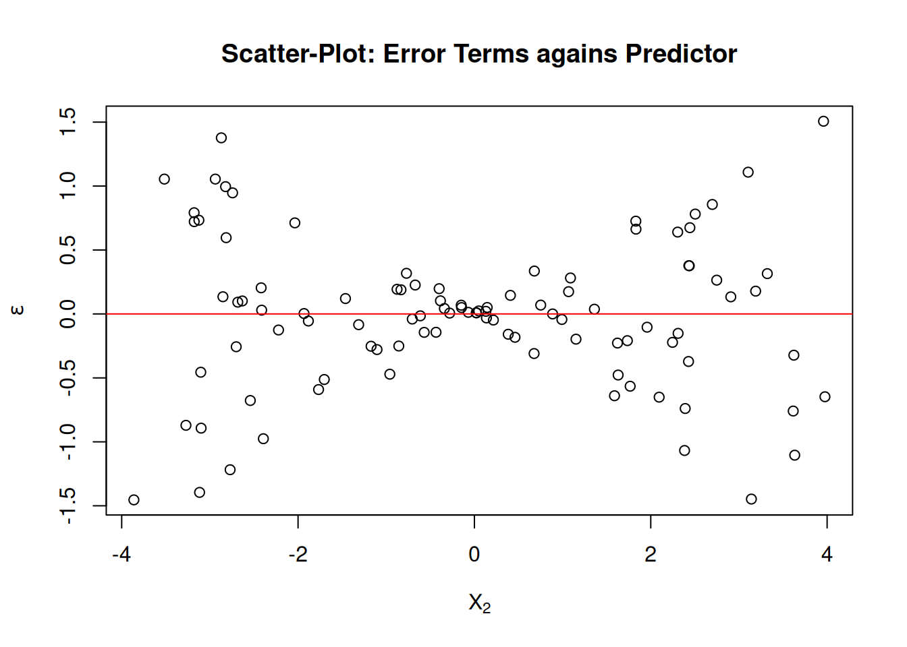
Example: Homoskedastic Error
Let \(X_i\in\mathbb{R}^2\) with \(X_{i0}=1\) and \[
X_{i2}\sim \mathcal{U}[-4,4],\quad i=1,\dots,n,
\] and let \[
\epsilon_i|X_i\sim \mathcal{U}[-1, 1],\quad i=1,\dots,n
\] where \(\mathcal{U}[a,b]\) denotes the uniform distribution over \([a,b].\)
This error term fulfills the assumption of exogeneity (Assumption 2) since \[
E(\epsilon_i|X_i)=\underbrace{\frac{1}{2}(-1 + 1)}_{=\frac{1}{2}(a+b)}=0
\] for every possible realization of \(X_i.\)
Moreover, the error term \(\epsilon_i\) is also homoskedastic, since its conditional variance is not a function of \(X_{i2}\colon\)\[
Var(\epsilon_i|X_i)=\underbrace{\frac{1}{12}(1 - (-1))^2}_{=\frac{1}{12}(b-a)^2}=\frac{1}{12}2^2
\]
R-code:
n<-100# sample sizeX_2<-runif(n =n, min =-4, max =4)eps<-runif(n =n, min =-1, max =1)plot( y =eps[order(X_2)], x =X_2[order(X_2)], xlab =expression(X[2]), ylab =expression(epsilon), main ="Scatter-Plot: Error Terms agains Predictor")abline(h=0, col ="red")
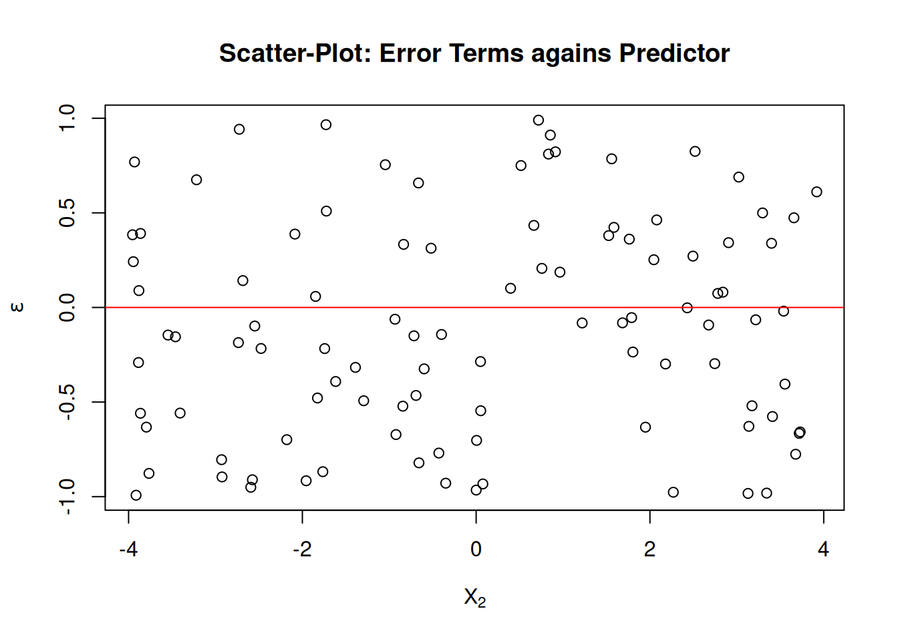
2.2 Deriving the Expression of the OLS Estimator
See Section Chapter 3 for a refresher on matrix algebra.
We derive the expression for the OLS estimator \[
\hat\beta=(\hat\beta_0,\dots,\hat\beta_p)^{\top}\in\mathbb{R}^{p+1}
\] as the vector-valued minimizing argument of the sum of squared residuals, \[
\operatorname{RSS}(b)=\sum_{i=1}^n\big(\underbrace{Y_i-X_i^{\top}b}_{\text{$i$th residual}}\big)^2
\] with \(b\in\mathbb{R}^{(p+1)}.\)
Using matrix/vector notation we can write \(\operatorname{RSS}(b)\) as \[
\begin{align*}
\operatorname{RSS}(b)
&=\sum_{i=1}^n(Y_i-X_i^{\top}b)^2\\[2ex]
&=(Y-X b)^{\prime}(Y-X b)\\[2ex]
&=Y^{\prime}Y-2 Y^{\prime} X b+b^{\prime} X^{\prime} X b.
\end{align*}
\] To find the minimizing argument \[
\hat\beta = \arg\min_{b\in\mathbb{R}^{p+1}}\operatorname{RSS}(b)
\] we compute the vector containing all partial derivatives \[
\begin{align*}
\underset{((p+1)\times 1)}{\frac{\partial \operatorname{RSS}(b)}{\partial b}} &=-2\left(X^{\prime}Y -X^{\prime} Xb\right).
\end{align*}
\] Setting each partial derivative to zero leads to \((p+1)\) linear equations (normal equations) in \((p+1)\) unknowns. This linear system of equations defines the OLS estimates, \(\hat{\beta}\), for a given dataset: \[
\begin{align*}
-2\left(X^{\prime}Y -X^{\prime} X\hat{\beta}\right)
&=\underset{((p+1)\times 1)}{0}\\[2ex]
X^{\prime} X\hat{\beta}
&=\underset{((p+1)\times 1)}{X^{\prime}Y}.
\end{align*}
\] From our full rank assumption (Assumption 3) it follows that \(X^{\prime}X\) is invertible which allows us to solve the equation system by \[
\begin{align*}
\underset{((p+1)\times 1)}{\hat{\beta}} &=\left(X^{\prime} X\right)^{-1} X^{\prime} Y.
\end{align*}
\]
The following codes computes the estimate \(\hat{\beta}\) for a given dataset with \(X_i\in\mathbb{R}^{p+1}\), \(p=2\).
# Some given dataX_1<-c(1.9,0.8,1.1,0.1,-0.1,4.4,4.6,1.6,5.5,3.4)X_2<-c(66, 62, 64, 61, 63, 70, 68, 62, 68, 66)Y<-c(0.7,-1.0,-0.2,-1.2,-0.1,3.4,0.0,0.8,3.7,2.0)dataset<-data.frame("X_1"=X_1, "X_2"=X_2, "Y"=Y)## Compute the OLS estimationlmobj<-lm(Y~X_1+X_2, data =dataset)## Plot sample regression surfacelibrary("scatterplot3d")# library for 3d plotsplot3d<-scatterplot3d(x =X_1, y =X_2, z =Y, angle =33, scale.y =0.8, pch =16, color ="red", xlab =expression(X[1]), ylab =expression(X[2]), main ="OLS Regression Surface")plot3d$plane3d(lmobj, lty.box ="solid", col=gray(.5), draw_polygon=TRUE)
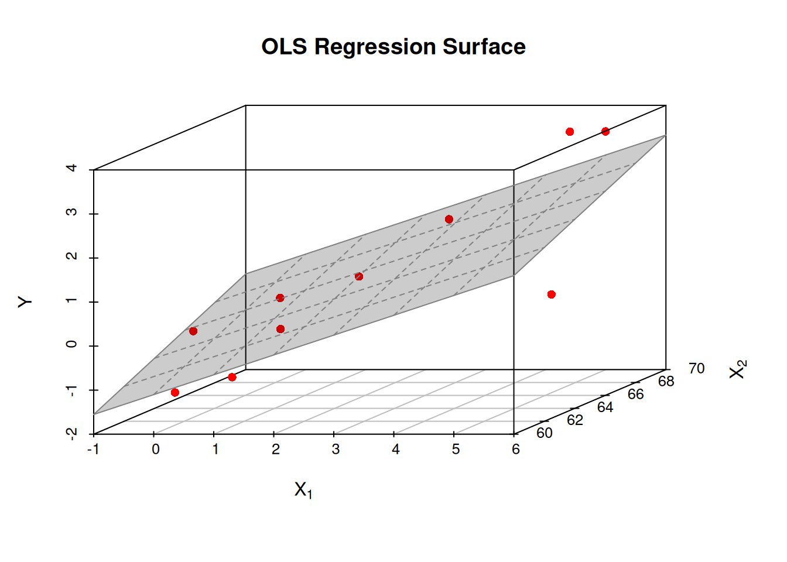
2.3 Fitted Values, Residuals, and Projection Matrices
Predicted/Fitted Values and Residuals
The (OLS) Predicted/Fitted Values:\[
\hat{Y}_i=X_i^{\top}\hat\beta, \quad i=1,\dots,n
\] The \((n\times 1)\) vector of predicted (fitted) values \[
\begin{align*}
\hat{Y} = \left(\begin{matrix}\hat{Y}_1\\\hat{Y}_2\\ \vdots\\ \hat{Y}_n\end{matrix}\right)
&=X\hat{\beta}\\[-2ex]
&=\underbrace{X(X^{\top}X)^{-1}X^{\top}}_{=P_X}Y\\[2ex]
&=P_X Y
\end{align*}
\]
The matrix \[
P_X=X(X^{\top}X)^{-1}X^{\top}
\] is the \((n\times n)\)projection matrix that projects any vector from \(\mathbb{R}^n\) into the column space spanned by the column vectors of \(X\) and \[
M_X=I_n-X(X^{\top}X)^{-1}X^{\top}=I_n-P_X
\] is the associated \((n\times n)\)orthogonal projection matrix that projects any vector from \(\mathbb{R}^n\) into the vector space that is orthogonal to that spanned by the column vectors of \(X.\)
2.4 Assessing the Accuracy of the Model Fit
The larger the proportion of the explained variance, the better is the fit of the estimated model \(\hat{Y}_i=\hat{f}(X_i)\) to the data \((Y_i,X_i^{\top})\), \(i=1,\dots,n\).
This motivates the definition of the so-called \(R^2\) coefficient of determination: \[
\begin{eqnarray*}
R^2
%&=\frac{\sum_{i=1}^n\left(\hat{Y}_i-\bar{\hat{Y}}\right)^2}{\sum_{i=1}^n\left(Y_i-\bar{Y}\right)^2}\\[2ex]
&=1-\frac{\sum_{i=1}^ne_i^2}{\sum_{i=1}^n\left(Y_i-\bar{Y}\right)^2}\\[2ex]
&=1-\frac{\operatorname{RSS}}{\operatorname{TSS}}
\end{eqnarray*}
\] with \[
\begin{align*}
\operatorname{RSS}\equiv \operatorname{RSS}(\hat\beta)=\sum_{i=1}^n\left(Y_i-X_i^{\top}\hat\beta\right)^2=\sum_{i=1}^ne_i^2
\end{align*}
\] and \[
\begin{align*}
\operatorname{TSS}=\sum_{i=1}^n\left(y_i-\bar{y}\right)^2.
\end{align*}
\]
\(\operatorname{TSS}\) “Total Sum of Squares”
\(\operatorname{RSS}\) “Residual Sum of Squares”
Obviously, we have that \(0\leq R^2\leq 1\).
The closer \(R^2\) lies to \(1\), the better is the fit of the model to the observed training data.
In tendency an accurate model has …
a low residual standard error \(\operatorname{RSE}\)\[
\operatorname{RSE}=\sqrt{\frac{\operatorname{RSS}}{n-(p+1)}}
\]
a high \(R^2\)
\[
R^2=\frac{\operatorname{TSS}-\operatorname{RSS}}{\operatorname{TSS}}=1-\frac{\operatorname{RSS}}{\operatorname{TSS}},
\] where \(0\leq R^2\leq 1.\)
\(R^2\) and Correlation Coefficient
In the case of the simple linear regression model\[
Y_i=\beta_0 + \beta_1 X_{i1} + \epsilon_i,\quad i=1,\dots,n
\] the \(R^2\) equals the squared sample correlation coefficient between \(Y_i\) and \(X_{i1}\), \[
R^2 = r_{Y,X_1}^2,
\] where \[
r_{Y,X_1}=\frac{\sum_{i=1}^n(X_{i1}-\bar{X}_1)(Y_i-\bar{Y})}{\sqrt{\sum_{i=1}^n(X_{i1}-\bar{X}_1)^2}\sqrt{\sum_{i=1}^n(Y_i-\bar{Y})^2}},
\] where \(\bar{X}_1=n^{-1}\sum_{i=1}^nX_{i1}.\)
In case of the multiple linear regression model\[
Y_i=\beta_0+\sum_{k=1}^p\beta_k X_{ik}+\epsilon_i,\quad i=1,\dots,n
\] the \(R^2\) equals the squared correlation between \(Y_i\) and the fitted values \(\hat{Y}_i\): \[
R^2=r^2_{Y,\hat{Y}}
\] with \[
r_{Y,\hat{Y}}=\frac{\sum_{i=1}^n(Y_i-\bar{Y})(\hat{Y}_i-\bar{\hat{Y}})}{\sqrt{\sum_{i=1}^n(Y_i-\bar{Y})^2}\sqrt{\sum_{i=1}^n(\hat{Y}_i-\bar{\hat{Y}})^2}},
\] where \(\bar{Y}=n^{-1}\sum_{i=1}^nY_{i}.\)
Caution
A high/low \(R^2\) does not mean a validation/falsification of the estimated model. Any econometric/statistical model needs a plausible explanation from relevant (economic) theory.
The most often criticized disadvantage of the \(R^2\) is that additional regressors (relevant or not) will increase the \(R^2\). The below R-code demonstrates this problem.
set.seed(123)n<-100# Sample sizeX<-runif(n, 0, 10)# Relevant X variableX_ir<-runif(n, 5, 20)# Irrelevant X variableerror<-rt(n, df =10)*10# True (usually unknown) errorY<-1+5*X+error# Y variablelm1<-summary(lm(Y~X))# Correct OLS regression lm2<-summary(lm(Y~X+X_ir))# OLS regression with X_ir lm1$r.squared<lm2$r.squared
[1] TRUE
So, \(R^2\) increases here even though X_ir is a completely irrelevant explanatory variable.
Because of this, the \(R^2\) cannot be used as a criterion for model selection. Possible solutions are given by penalized criterions such as the so-called adjusted\(R^2\), \(\overline{R}^2,\) defined as \[
\begin{eqnarray*}
\overline{R}^2&=&1-\frac{\frac{1}{n-(p+1)}\sum_{i=1}^ne^2_i}{\frac{1}{n-1}\sum_{i=1}^n\left(y_i-\bar{y}\right)^2}\leq R^2%\\
\end{eqnarray*}
\]
The adjustment is in terms of the degrees of freedom \(n-(p+1)\).
round(lm1$adj.r.squared, digits =3)# model without X_ir
[1] 0.569
round(lm2$adj.r.squared, digits =3)# model with X_ir
[1] 0.564
2.5 Assessing the Accuracy of the Coefficient Estimators \(\hat{\beta}\)
2.5.1 Bias of \(\hat{\beta}\)
Under the Assumptions 1-4, one can show that the OLS estimator \[
\hat\beta = (X^{\top}X)^{-1}X^{\top}Y
\] is unbiased, i.e. \[
\begin{align*}
\operatorname{Bias}(\hat\beta)
& = E(\hat\beta) - \beta = \underset{(p+1)\times 1}{0}.
\end{align*}
\qquad(2.3)\] That is, in the mean of \(\hat\beta\) equals \(\beta.\)
Observe that \[
\hat\beta=(X^{\top}X)^{-1}X^{\top}Y
\] consists of two multivariate random variables; namely
\(X\in\mathbb{R}^{n\times(p+1)}\) and
\(Y\in\mathbb{R}^n.\)
Thus we firstly need to derive the conditional mean\(E(\hat\beta|X),\) which effectively allows us to focus on randomness due to \(\epsilon,\) \[
\begin{align*}
E(\hat\beta|X)
&= E((X^{\top}X)^{-1}X^{\top}Y|X) \\[2ex]
&\text{Using that (by Assumption 1 Part (a)) $Y=X\beta + \epsilon$:}\\[2ex]
&= E((X^{\top}X)^{-1}X^{\top}\underbrace{Y}_{=X\beta+\epsilon}|X) \\[2ex]
&= E((X^{\top}X)^{-1}X^{\top}(X\beta+\epsilon)|X) \\[2ex]
&= E(\underbrace{(X^{\top}X)^{-1}X^{\top}X}_{=I_{(p+1)}}\beta|X) + E((X^{\top}X)^{-1}X^{\top}\epsilon|X)\\[2ex]
&= \underbrace{E(\beta|X)}_{=\beta} + \underbrace{E((X^{\top}X)^{-1}X^{\top}\epsilon|X)}_{=(X^{\top}X)^{-1}X^{\top}E(\epsilon|X)} \\[2ex]
&= \beta + (X^{\top}X)^{-1}X^{\top}\underbrace{E(\epsilon|X)}_{=0}\\[2ex]
&= \underset{(p+1)\times 1}{\beta}
\end{align*}
\] Thus \(\hat\beta\) is conditionally unbiased:\[
\begin{align*}
\operatorname{Bias}(\hat\beta|X)
& = E(\hat\beta|X) - \beta\\[2ex]
& = \beta - \beta \\[2ex]
& = \underset{(p+1)\times 1}{0}
\end{align*}
\]
From this if follows, by the iterated law of expectations, that the OLS estimator is also unconditionally unbiased: \[
\begin{align*}
\operatorname{Bias}(\hat\beta)
& = E(\operatorname{Bias}(\hat\beta|X))\\[2ex]
& = E\left(E(\hat\beta|X) - \beta\right)\\[2ex]
& = E\left(E(\hat\beta|X)\right) - E\left(\beta\right)\\[2ex]
& = E\left(\beta\right) - E\left(\beta\right)\\[2ex]
& = \beta - \beta = 0.
\end{align*}
\]
2.5.2 Standard Error of \(\hat{\beta}_j\)
The standard error of \(\hat{\beta}_j,\) for each \(j=0,\dots,p,\) is given by \[
\operatorname{SE}(\hat\beta_j|X)=\sqrt{Var(\hat\beta_j|X)},
\] where \[
Var(\hat\beta_j|X) = \left[Var(\hat\beta|X)\right]_{(j,j)}
\] denotes the \(j\)th diagonal element of the symmetric \((p+1)\times (p+1)\) variance-covariance matrix \[
\begin{align*}
&Var(\hat\beta|X)=\\[2ex]
&=\begin{pmatrix}
Var(\hat\beta_0|X)&Cov(\hat\beta_0,\hat\beta_1|X)&\cdots&Cov(\hat\beta_0,\hat\beta_{p}|X)\\
Cov(\hat\beta_1,\hat\beta_0|X)&Var(\hat\beta_1|X)& &Cov(\hat\beta_1,\hat\beta_{p}|X)\\
\vdots &&\ddots&\\
Cov(\hat\beta_p,\hat\beta_0|X)&Cov(\hat\beta_p,\hat\beta_1|X)&\cdots&Var(\hat\beta_{p}|X)\\
\end{pmatrix}
\end{align*}
\]
To get a useful, explicit expression for the standard error, \(\operatorname{SE}(\hat\beta_j|X),\) we need to first compute an explicit expression for the symmetric \((p+1)\times(p+1)\) variance-covariance matrix \(Var(\hat\beta|X).\)
Deriving the Expression for \(Var(\hat\beta|X)\colon\)
Note that \[
\begin{align*}
\hat{\beta}
&=(X^{\top}X)^{-1}X^{\top}Y\\[2ex]
&\text{Using that (by Assumption 1 Part (a)) $Y=X\beta + \epsilon$:}\\[2ex]
&=(X^{\top}X)^{-1}X^{\top}\; \underbrace{(X\beta + \epsilon)}_{=Y}\\[2ex]
&=\underbrace{(X^{\top}X)^{-1}X^{\top}X}_{=I_{(p+1)}}\;\beta + (X^{\top}X)^{-1}X^{\top}\epsilon\\
&=\beta + (X^{\top}X)^{-1}X^{\top}\epsilon
\end{align*}
\] This leads to the so-called sampling error expression\[
\hat{\beta} - \beta = (X^{\top}X)^{-1}X^{\top}\epsilon.
\] With this, we can derive the general explicit expression for \(Var(\hat\beta|X).\)\[
\begin{align*}
&Var(\hat\beta|X)=\\[2ex]
&\text{Adding/subtracting constants does not change variance:}\\[2ex]
&=Var(\hat\beta - \beta|X)\\[2ex]
&\text{Using the sampling error expression $\hat{\beta} - \beta = (X^{\top}X)^{-1}X^{\top}\epsilon$:}\\[2ex]
&=Var((X^{\top}X)^{-1}X^{\top}\epsilon|X)\\[2ex]
&\text{Using that $Var(Z|X)=E[(Z-E(Z|X))(Z-E(Z|X))|X]$:}\\[2ex]
&=E\Big[\big((X^{\top}X)^{-1}X^{\top}\epsilon-\underbrace{E((X^{\top}X)^{-1}X^{\top}\epsilon|X)}_{=0}\big)\times\\[2ex]
&\phantom{=\Big(}\,\times\big((X^{\top}X)^{-1}X^{\top}\epsilon-\underbrace{E((X^{\top}X)^{-1}X^{\top}\epsilon|X)}_{=0}\big)^{\top}|X\Big]\\[2ex]
&=E\left[((X^{\top}X)^{-1}X^{\top}\epsilon)((X^{\top}X)^{-1}X^{\top}\epsilon)^{\top}|X\right]\\[2ex]
&=E\left[(X^{\top}X)^{-1}X^{\top}\epsilon\epsilon^{\top} X(X^{\top}X)^{-1}|X\right]\\[2ex]
&=\;\;\;(X^{\top}X)^{-1}X^{\top}\underbrace{E\left(\epsilon\epsilon^{\top}|X\right)}_{=\highlight{Var(\epsilon|X)}}X(X^{\top}X)^{-1}
\end{align*}
\] That is, the explicit expression for \(Var(\hat\beta|X)\) depends on the explicit form of the symmetric \((n\times n)\) matrix \(Var(\epsilon|X)\)\[
\begin{align*}
&\highlight{Var(\epsilon|X)}=\\[2ex]
&=\begin{pmatrix}
Var(\epsilon_1|X)&Cov(\epsilon_1,\epsilon_2|X)&\cdots&Cov(\epsilon_1,\epsilon_n|X)\\
Cov(\epsilon_2,\epsilon_1|X)&Var(\epsilon_2|X)& &Cov(\epsilon_2,\epsilon_n|X)\\
\vdots &&\ddots&\\
Cov(\epsilon_n,\epsilon_1|X)&Cov(\epsilon_n,\epsilon_2|X)&\cdots&Var(\epsilon_n|X)\\
\end{pmatrix}
\end{align*}
\]
The explicit form of the symmetric \((n\times n)\) matrix \(Var(\epsilon|X)\) depends on our (hopefully correct) assumption on the error-term variance (Assumption 4).
We consider the two most prominent types of assumptions for the symmetric \((n\times n)\) matrix \(Var(\epsilon|X)\):
We can estimate the homoskedastik error term variance \(\sigma^2\) using the Residual Standard Error: \[
\begin{align*}
\hat\sigma = \operatorname{RSE}
&=\sqrt{\frac{\operatorname{RSS}}{n-(p+1)}}\\[2ex]
&=\sqrt{ \frac{1}{n-(p+1)} \sum_{i=1}^n e_i^2}.
\end{align*}
\]
Summing up:
In the case of homoskedastic (and uncorrelated) error terms the standard error of \(\hat\beta_j\) is \[
\operatorname{SE}(\hat\beta_j|X) = \sqrt{\left[\sigma^2 \left(X^{\top}X\right)^{-1}\right]_{(j,j)}}.
\] Typically, \(\sigma^2\) is unknown, and has to be estimated using, for instance, the empirical residual standard error \[
\widehat{\operatorname{SE}}(\hat\beta_j|X) = \sqrt{\left[\hat{\sigma}^2 \left(X^{\top}X\right)^{-1}\right]_{(j,j)}}.
\]
This is the default version for computing the standard error in statistical software packages such as R.
Call:
lm(formula = Y ~ X_1 + X_2)
Residuals:
Min 1Q Median 3Q Max
-39.071 -7.138 -0.575 9.570 33.368
Coefficients:
Estimate Std. Error t value Pr(>|t|)
(Intercept) 1.0112 4.2440 0.238 0.812
X_1 5.1954 0.4529 11.472 < 2e-16 ***
X_2 -4.7001 0.6690 -7.026 2.95e-10 ***
---
Signif. codes: 0 '***' 0.001 '**' 0.01 '*' 0.05 '.' 0.1 ' ' 1
Residual standard error: 12.84 on 97 degrees of freedom
Multiple R-squared: 0.6565, Adjusted R-squared: 0.6494
F-statistic: 92.68 on 2 and 97 DF, p-value: < 2.2e-16
2.5.2.2 Heteroskedastic and Uncorrelated Errors
If \[
\begin{align*}
Var(\epsilon|X)
&=
\begin{pmatrix}
\sigma_1^2 & 0 & \cdots & 0\\
0 & \sigma_2^2 & \cdots & 0\\
\vdots & \vdots & \ddots & 0\\
0 & 0 & \cdots & \sigma_n^2\\
\end{pmatrix}
=\operatorname{diag}(\sigma_1^2,\sigma_2^2,\dots,\sigma_n^2),
\end{align*}
\] then \[
\begin{align*}
&Var(\hat\beta|X)=\\[2ex]
&=(X^{\top}X)^{-1}X^{\top} \;\highlight{Var(\epsilon|X)}\; X(X^{\top}X)^{-1}\\[2ex]
&=(X^{\top}X)^{-1}X^{\top} \;\highlight{\operatorname{diag}(\sigma_1^2,\dots,\sigma_n^2)}\; X(X^{\top}X)^{-1}\\[2ex]
&=(X^{\top}X)^{-1} \left(\sum_{i=1}^n \sigma_i^2 X_i X_i^{\top}\right) (X^{\top}X)^{-1}\\[2ex]
\end{align*}
\] Thus, the symmetric \((p+1)\times(p+1)\) variance-covariance matrix \(Var(\hat\beta|X)\) keeps its sandwich form, where the inner part of the sandwich \[
\left(\sum_{i=1}^n \sigma_i^2 X_i X_i^{\top}\right)
\] is typically unknown, since \(\sigma_1^2,\sigma_2^2,\dots,\sigma_n^2\) are typically unknown.
There are different, so-called Heteroskedasticity Consistent (HC) estimators to estimate the unknown expression \[
\left(\sum_{i=1}^n \sigma_i^2 X_i X_i^{\top}\right).
\]
The statistic \(h_i\) is simply the \(i\)th diagonal element of the projection matrix \(P_X\)\[
h_i=[P_X]_{ii}
\] and is called the \(i\)th leverage statistic, where
\(1/n\leq h_i\leq 1\) and
\(\bar{h}=n^{-1}\sum_{i=1}^nh_i=(p+1)/n\).
Observations \(X_i\) with leverage statistics \(h_i\) that greatly exceed the average leverage value \((p+1)/n\) are referred to as “high leverage” observations. High leverage observations \(X_i\) are observations that are far away from the predictor values of all other subjects.
High leverage observations \(X_i\) have the potential to distort the estimation results, \(\hat\beta_n\). Indeed, a high leverage observation \(X_i\) will have an distorting effect on the estimation results if the absolute value of the corresponding residual \(|e_i|\) is unusually large—such observations are called influential outliers. Such observations increase the estimation uncertainty.
General idea of the HC2-HC4 estimators is to increase the estimated variance in order to account for the effects of influential outliers. The residuals \(e_i\) belonging to \(X_i\) values that have a large leverage \(h_i\) receive a higher weight and thus increase the value of \(\widehat{E}(\epsilon^2_iX_iX_i^{\top}).\) This strategy takes into account increased estimation uncertainties due to single influential outliers.
The estimator HC0 was suggested in the econometrics literature by White (1980) and is justified by asymptotic (\(n\to\infty\)) arguments. The estimators HC1, HC2 and HC3 were suggested by MacKinnon and White (1985) to improve the finite sample performance of HC0. Using an extensive Monte Carlo simulation study comparing HC0-HC3, Long and Ervin (2000) concludes that HC3 provides the best overall performance in finite samples. Cribari-Neto (2004) suggested the estimator HC4 to further improve the performance in finite sample behavior, especially in the presence of influential observations (large \(h_i\) values).
Summing up:
In the case of heteroskedastic and uncorrelated error terms the standard error of \(\hat\beta_j\) is \[
\operatorname{SE}(\hat\beta_j|X) = \sqrt{\left[(X^{\top}X)^{-1} \left(\sum_{i=1}^n \sigma_i^2 X_i X_i^{\top}\right) (X^{\top}X)^{-1}\right]_{(j,j)}}.
\] Typically, the variance terms \(\sigma_i^2\) are unknown, but the expression \(\left(\sum_{i=1}^n \sigma_i^2 X_i X_i^{\top}\right)\) can be estimated using the HC estimators above, such that we can work with \[
\widehat{\operatorname{SE}}(\hat\beta_j|X) = \sqrt{\left[(X^{\top}X)^{-1} \left(\textsf{HC}\right) (X^{\top}X)^{-1}\right]_{(j,j)}},
\] where \(\textsf{HC}\) is a placeholder for one the Heteroskedasticity Consistent estimators HC1-HC4 given above.
The sandwich-package allows to compute these standard errors in R
set.seed(123)n<-100# Sample sizeX_1<-runif(n, 0, 10)# Predictor variable X_1X_2<-rnorm(n, -5, 2)# Predictor variable X_2error<-rt(n, df =10)*abs(X_2)# True (usually unknown) heteroskedastic errorY<-1+5*X_1-5*X_2+error# Y variable## Package for computing robust variance estimationslibrary("sandwich")# vcovHC(), ## Package for producing an OLS output table (etc.)suppressMessages(library("lmtest"))# coeftest## Estimate the linear regression model parameterslm_obj<-lm(Y~X_1+X_2)vcovHC3_mat<-sandwich::vcovHC(lm_obj, type="HC3")lmtest::coeftest(lm_obj, vcov =vcovHC3_mat)
t test of coefficients:
Estimate Std. Error t value Pr(>|t|)
(Intercept) 3.16955 2.17658 1.4562 0.1486
X_1 4.92390 0.22302 22.0784 <2e-16 ***
X_2 -4.57382 0.34716 -13.1748 <2e-16 ***
---
Signif. codes: 0 '***' 0.001 '**' 0.01 '*' 0.05 '.' 0.1 ' ' 1
## Note: The HC3-Robust SE estimates are: round(sqrt(diag(vcovHC3_mat)), digits =5)
(Intercept) X_1 X_2
2.17658 0.22302 0.34716
2.6 Inference
2.6.1 Confidence Intervals for \(\beta_j\)
Given the estimate \(\hat\beta_j\) and the estimate of the standard error \[
\widehat{\operatorname{SE}}(\hat\beta_j|X),
\] we can construct the \((1-\alpha)\cdot 100\%\) confidence interval for the true (unknown) \(\beta_j\)-parameter: \[
\begin{align*}
&\operatorname{CI}^{1-\alpha}_{\beta_j}=\\[2ex]
=&\left[\hat\beta_j - q^{t,n-(p+1)}_{1-\alpha/2}\widehat{\operatorname{SE}}(\hat\beta_j|X),\;
\hat\beta_j + q^{t,n-(p+1)}_{1-\alpha/2}\widehat{\operatorname{SE}}(\hat\beta_j|X)\right]\\[2ex]
&\text{More compact notation:}\\[2ex]
=&\left[\hat\beta_j\; {\color{red}\pm} \; q^{t,n-(p+1)}_{1-\alpha/2}\widehat{\operatorname{SE}}(\hat\beta_j|X)\right],
\end{align*}
\] where \[
q^{t,n-(p+1)}_{1-\alpha/2}
\] denotes the \((1-\alpha/2)\)-quantile of the \(t\)-distribution with \(\operatorname{df}=n-(p+1)\) degrees of freedom, and where \(\alpha\) denotes the significance level with typical choices:
\(\alpha = 0.05\)
\(\alpha = 0.01\)
Interpretation
The confidence interval \[
\operatorname{CI}^{1-\alpha}_{\beta_j}
\] is a random confidence interval.
For a given, observed realization of the random sample \[
((Y_{1,obs},X_{10,obs},\dots,X_{1(p+1),obs}),\dots,(Y_{n},X_{n0,obs},\dots,X_{n(p+1),obs}))
\] we can compute a given, observed realization of the confidence interval \[
\operatorname{CI}^{1-\alpha}_{\beta_j,obs}=\left[\hat\beta_{j,obs}\; \pm \; q^{t,n-(p+1)}_{1-\alpha/2}\widehat{\operatorname{SE}}(\hat\beta_j|X)_{obs}\right],
\] where \[
\hat\beta_{j,obs}=\left[(X_{obs}^{\top}X_{obs})^{-1}X_{obs}^{\top}Y_{obs}\right]_{j}
\] and (homoskedastic case) \[
\widehat{\operatorname{SE}}(\hat\beta_j|X)_{obs}=\sqrt{\left[\hat{\sigma}^2_{obs}(X_{obs}^{\top}X_{obs})^{-1}\right]}
\]
There is a \((1-\alpha)\cdot 100\%\) chance (in resamplings from the training data random sample) that the random confidence interval\[
\operatorname{CI}^{1-\alpha}_{\beta_j}
\] contains the true (fix) parameter value \(\beta_j.\)
To understand the interpretation of confidence intervals, it is very instructive to look at visualizations:
Only the above frequentist point of view can be nicely interpreted.
A given, observed confidence interval \[
\operatorname{CI}^{1-\alpha}_{\beta_j,obs},
\] either contains the true parameter value or not and usually we do not know it, since we do not know the value of \(\beta_j.\)
2.6.2 Confidence Intervals for Statistical Hypothesis Testing
We can use the \((1-\alpha)\cdot 100\%\) confidence interval to do statistical hypothesis testing at the significance level \(0<\alpha<1.\) Typical significance levels:
\(\alpha=0.05\)
\(\alpha=0.01\)
Let us consider the following null-hypothesis \((H_0)\) that the true (usually unknown) value \(\beta_j\) equals the null-hypothetical value\(\beta^{(H_0)}_{j}\) versus the two-sided alternative hypothesis \((H_1)\) that the true (usually unknown) value \(\beta_j\) does not equal the null-hypothetical value \(\beta^{(H_0)}_{j}:\)\[
\begin{align*}
H_0:&\;\beta_j=\beta^{(H_0)}_{j}\\
H_1:&\;\beta_j\neq \beta^{(H_0)}_{j}
\end{align*}
\]
Classic No-Effect Null-Hypothesis
For the special case, where the null-hypothetical value equals zero \[
\beta^{(H_0)}_{j}=0
\] we test the classic no-effect null-hypothesis.
Testing-Procedure:
If the observed (obs) realization of the confidence interval, \(\operatorname{CI}^{1-\alpha}_{\beta_j,obs},\)contains the null-hypothetical value \(\beta^{(H_0)}_{j},\) i.e. \[
\begin{align*}
\beta^{(H_0)}_{j}&\in\operatorname{CI}^{1-\alpha}_{\beta_j,obs}\\[2ex]
\Leftrightarrow\beta^{(H_0)}_{j}&\in
\left[
\hat{\beta}_{j,obs} \;\pm\; q^{t,n-(p+1)}_{1-\alpha/2}\widehat{\operatorname{SE}}(\hat\beta_j)_{obs}
\right],
\end{align*}
\] then we cannot reject the null hypothesis\(\beta_j=\beta^{(H_0)}_{j}.\)
If, however, the observed (obs) realization of the confidence interval, \(\operatorname{CI}^{1-\alpha}_{\beta_j,obs},\) does not contain the null-hypothetical value \(\beta^{(H_0)}_{j},\) i.e. \[
\begin{align*}
\beta^{(H_0)}_{j}&\not\in\operatorname{CI}^{1-\alpha}_{\beta_j,obs}\\[2ex]
\Leftrightarrow\beta^{(H_0)}_{j}&\not\in
\left[
\hat{\beta}_{j,obs} \;\pm\; q^{t,n-(p+1)}_{1-\alpha/2}\widehat{\operatorname{SE}}(\hat\beta_j)_{obs}
\right],
\end{align*}
\] then we reject the null hypothesis and adopt the alternative \(\beta_j\neq\beta^{(H_0)}_{j}.\)
2.6.3\(t\)-Test
Standard errors can also be used to construct test statistics for statistical hypothesis testing. In the following, we look at the \(t\)-test statistic.
Choose a significance level \(0<\alpha<1\) such as, for instance,
\(\alpha=0.05\)
\(\alpha=0.01\)
Let us (again) consider the null-hypothesis \((H_0)\) that the true (usually unknown) value \(\beta_j\) equals the null-hypothetical value\(\beta^{(H_0)}_{j}\) versus the two-sided alternative hypothesis \((H_1)\) that the true (usually unknown) value \(\beta_j\) does not equal the null-hypothetical value \(\beta^{(H_0)}_{j}:\)\[
\begin{align*}
H_0:&\;\beta_j=\beta^{(H_0)}_{j}\\[2ex]
H_1:&\;\beta_j\neq \beta^{(H_0)}_{j}
\end{align*}
\]
The random\(t\)-test statistic is given by \[
T=\frac{\hat\beta_j - \beta^{(H_0)}_{j}}{\widehat{\operatorname{SE}}(\hat\beta_j)}
\]
Under the null-hypothesis, \(\beta_j=\beta^{(H_0)}_{j},\) the \(t\)-test statistic is \(t\)-distributed with \(\operatorname{df}=n-(p+1)\) degrees of freedom. \[
T=\frac{\hat\beta_j - \beta^{(H_0)}_{j}}{\widehat{\operatorname{SE}}(\hat\beta_j)}\overset{H_0}{\sim} t_{n-(p+1)},
\] where \(t_{n-(p+1)}\) denotes the \(t\)-distribution with \(\operatorname{df}=n-(p+1)\) degrees of freedom.
For a given realization of the training data random sample \[
((y_{1},x_{10},\dots,x_{1(p+1)}),\dots,(y_{n},x_{n0},\dots,x_{np}))
\] we obsserve a specific realization of the \(t\)-test statistic \[
T_{obs}=\frac{\hat\beta_{j,obs} - \beta^{(H_0)}_{j}}{\widehat{\operatorname{SE}}(\hat\beta_j)_{obs}}
\]
\(p\)-value:
The \(p\)-value is the probability of seeing a realization of the random\(t\)-test statistic, \(T,\) which is more extreme than the observed value of the test-statistic, \(T_{obs},\) given the null-hypothesis is true \[
\begin{align*}
p_{obs}
& = P\left(|T|\geq|T_{obs}|\;\;|\;\; \text{$H_0$ is true}\right)\\[2ex]
& = 2\cdot\min\{P\left(T\geq T_{obs} \;\;|\;\; \text{$H_0$ is true}\right),\;\\
& \;\;\;\;\;\;\;\;\;\;\;\;\;\;\;\;\; P\left(T\leq T_{obs} \;\;|\;\; \text{$H_0$ is true}\right)\}.
\end{align*}
\]
Testing-Procedure:
If the observed realization of the \(p\)-value is larger than or equal to the significance level \[
p_{obs}\geq \alpha,
\] then we cannot reject the null hypothesis\(\beta_j=\beta^{(H_0)}_{j}.\)
If, however, the observed realization of the \(p\)-value is strictly smaller than the significance level \[
p_{obs}<\alpha,
\] then we reject the null hypothesis and adopt the alternative hypothesis \(\beta_j\neq \beta^{(H_0)}_{j}.\)
Caution
Even very large \(p\)-values \(p_{obs}\approx 1 \gg \alpha\) can occur simply because a given violation of a null-hypothesis is smaller than the involved estimation errors.
❗The \(p\)-value is not the probability that the null-hypothesis is true❗
:::
Equivalence of Confidence Intervals and \(t\)-Test
It can be shown that a statistical hypothesis test based on the above confidence interval \(\operatorname{CI}^{1-\alpha}_{\beta_j,obs}\) leads to exactly the same test decisions as a statistical hypothesis test based on the above \(t\)-test statistic \(T_{obs}.\)
2.6.4\(F\)-Test
The \(t\)-test statistic (equivalently the confidence interval for \(\beta_j\)) allows us to test a null-hypothesis about one parameter \(\beta_j.\)
To test whether there is a relationship between the response \(Y\) and total vector predictors \((X_1,\dots,X_p),\) we can use the \(F\)-test statistic.
In this case, the \(F\)-test tests the null-hypothesis \[
\begin{align*}
H_0:&\;\beta_1=\beta_2=\dots=\beta_p=0\\
\text{versus}\quad H_1:&\;\text{at least one $\beta_j\neq 0$; $j=1,\dots,p$}
\end{align*}
\]
\(F\)-test statistic \[
F=\frac{(\operatorname{TSS}-\operatorname{RSS})/p}{\operatorname{
RSS}/(n-p-1)}\overset{H_0}{\sim} F_{p,n-p-1}
\] Under \(H_0,\) i.e. if \(H_0\) is true, the \(F\)-test statistic has a \(F\)-distribution with \(p\) numerator and \((n-p-1)\) denominator degrees of freedom.
If \(H_0\) is correct \[
\begin{align*}
E((\operatorname{TSS}-\operatorname{RSS})/p)&=\sigma^2\\[2ex]
E(\operatorname{RSS}/(n-p-1))&=\sigma^2
\end{align*}
\]
Therefore:
If \(H_0\) is correct, we expect values of \(F\approx 1.\)
If \(H_1\) is correct, we expect values of \(F\gg 1.\)
For a given realization of the training data random sample \[
((y_{1},x_{10},\dots,x_{1(p+1)}),\dots,(y_{n},x_{n0},\dots,x_{np}))
\] we obsserve a specific realization of the \(F\)-test statistic \[
F_{obs}=\frac{(\operatorname{TSS}_{obs}-\operatorname{RSS}_{obs})/p}{\operatorname{
RSS}_{obs}/(n-p-1)}
\]
\(p\)-value:
The \(p\)-value is the probability of seeing a realization of the random\(F\)-test statistic, \(F,\) which is more extreme than the observed value of the test-statistic, \(F_{obs},\) given the null-hypothesis is true \[
\begin{align*}
p_{obs}
&=P\left( F \geq F_{obs} \;\;|\;\; \text{$H_0$ is true}\right),
\end{align*}
\] where \(F_{obs}\) denotes the observed value of the \(F\)-test statistic computed from the observed training data, and where \(F\) is a random variable that has a \(F_{p,n-p-1}\) distribution.
Testing-Procedure:
If the observed realization of the \(p\)-value is larger than or equal to the significance level \[
p_{obs}\geq \alpha,
\] then we cannot reject the null hypothesis.
If, however, the observed realization of the \(p\)-value is strictly smaller than the significance level \[
p_{obs}<\alpha,
\] then we reject the null hypothesis and adopt the alternative hypothesis.
2.6.5 Probability of a Type I Error, Power and Consistency
Every statistical testing procedure (conducted using confidence intervals or test-statistics) involves the decision of
not rejecting \(H_0\)
versus
rejecting \(H_0\)
In applied research, we “aim” for rejecting \(H_0.\) (Caution: the desire for rejecting \(H_0\) is the reason of a lot of scientific misconduct!) For instance, when we are able to reject the no-effect null-hypothesis \[
H_0: \beta_j = 0
\] and thus able to adopt the alternative \[
H_1: \beta_j \neq 0,
\] then we can state in a publication that variable \(X_j\) has an effect.
Thus, if we reject the null-hypothesis even though the null-hypothesis is true, we conduct a Type I Error and thus may falsely claim that variable \(X_j\) has an effect. Such a false claim can be fatal.
Therefore, a statistical hypothesis test is only valid if it is able control the probability of conducting a type I error from above by the chosen significance level; i.e. if \[
\underbrace{P(\text{reject }H_0 \;|\; H_0\text{ is true})}_{\text{Probability of a type I error}}\leq \alpha,
\] where \(\alpha\) is some small value like \(\alpha = 0.05\) or \(\alpha = 0.01.\) I.e., in \(100\) resamples we expect to see at most \(\alpha\cdot 100\) false rejections of \(H_0.\)
By choosing a small significance level like \(\alpha = 0.05\) or \(\alpha = 0.01,\) we make sure that we can be quite “sure” that we do not falsely reject \(H_0.\)
Caution
A statistical testing procedure only controls the probability of a type I error (falsely rejecting \(H_0,\) when \(H_0\) is true), \[
\underbrace{P(\text{reject }H_0 \;|\; H_0\text{ is true})}_{\text{Probability of a type I error}}\leq \alpha,
\] but not the probability of a type II error (falsely not rejecting \(H_0,\) when \(H_1\) is true). In fact, we typically do not know the probability of a type II error \[
\underbrace{P(\text{not reject }H_0 \;|\; H_1\text{ is true})}_{\text{Probability of a type II error}}\leq \;\; {\color{red}?}.
\]
Therefore, when we cannot reject the null-hypothesis we cannot claim that the null-hypothesis is probably true, simply because we cannot guarantee that the probability of a type II error (falsely not rejecting \(H_0,\) when \(H_1\) is true) is sufficiently small.
Under the alternative, i.e., if for instance \[
H_1: \beta_j \neq 0
\] is true, we want to be able to reject \(H_0\) with a large as possible probability. The probability of rejecting a false null-hypothesis is called Power\[
\underbrace{P(\text{reject }H_0 \;|\; H_1\text{ is true})}_{\text{Power}}
\] We want that \[
\underbrace{P(\text{reject }H_0 \;|\; H_1\text{ is true})}_{\text{Power}} \to 1\quad\text{as}\quad |\beta_j - 0| \to \infty
\] for each given sample size \(n,\) and that \[
\underbrace{P(\text{reject }H_0 \;|\; H_1\text{ is true})}_{\text{Power}} \to 1\quad\text{as}\quad n \to \infty
\] for each given violation of the null-hypothesis \(|\beta_j - 0|>0.\)
Testing procedures that fulfill the latter property are called consistent.
2.7 Other Considerations in the Regression Model
2.7.1 Qualitative Predictors
Often some predictors are qualitative variables (also known as a factor variables). For instance, the Credit dataset contains the following qualitative predictors:
own (house ownership: yes/no)
student (student status: yes/no)
status (marital status: yes/no)
region (regions: east, west or south)
Predictors with Only Two Levels
If a qualitative predictor (factor) only has two levels (i.e. possible values), then incorporating it into a regression model is very simple: We simply create an indicator or dummy variable that takes on two possible numerical values; for instance, \[
x_{i} = \left\{
\begin{array}{ll}
1&\quad \text{if the $i$th person owns a house}\\
0&\quad \text{if the $i$th person does not own a house.}
\end{array}\right.
\] Using this dummy variable as a predictor in the regression equation results in the following regression model: \[\begin{align*}
y_{i}
&=\beta_0 + \beta_1 x_i + \epsilon_i\\[2ex]
&= \left\{
\begin{array}{ll}
\beta_0 + \beta_1 + \epsilon_i &\quad \text{if the $i$th person owns a house}\\
\beta_0 + \epsilon_i &\quad \text{if the $i$th person does not own a house}
\end{array}\right.
\end{align*}\]
Interpretation:
\(\beta_0\): The average credit card balance among those who do not own a house
\(\beta_0+\beta_1\): The average credit card balance among those who do own a house
\(\beta_1\): The average difference in credit card balance between owners and non-owners
Alternatively, instead of a 0/1 coding scheme, we could create a dummy variable \[
x_{i} = \left\{
\begin{array}{ll}
1 &\quad \text{if the $i$th person owns a house}\\
-1 &\quad \text{if the $i$th person does not own a house.}
\end{array}\right.
\]\[\begin{align*}
y_{i}
&=\beta_0 + \beta_1 x_i + \epsilon_i\\[2ex]
&= \left\{
\begin{array}{ll}
\beta_0 + \beta_1 + \epsilon_i&\quad \text{if the $i$th person owns a house}\\
\beta_0 - \beta_1 + \epsilon_i&\quad \text{if the $i$th person does not own a house}
\end{array}\right.
\end{align*}\]
Interpretation:
\(\beta_0\): The overall average credit card balance (ignoring the house ownership effect)
\(\beta_1\): The average amount by which house owners and non-owners have credit card balances that are above and below the overall average, respectively.
Qualitative Predictors with More than Two Levels
When a qualitative predictor has more than two levels, a single dummy variable cannot represent all possible values. In this situation, we can create additional dummy variables. For example, for the
region\(\in\{\)South, West, East\(\}\)
variable, we create two dummy variables. The first could be \[
x_{i1} = \left\{
\begin{array}{ll}
1&\quad \text{if the $i$th person is from the South}\\
0&\quad \text{if the $i$th person is not from the South,}
\end{array}\right.
\] and the second could be \[
x_{i2} = \left\{
\begin{array}{ll}
1&\quad \text{if the $i$th person is from the West}\\
0&\quad \text{if the $i$th person is not from the West.}
\end{array}\right.
\] Using both of these dummy variables results in the following regression model: order to obtain the model \[\begin{align*}
y_{i}&=\beta_0 + \beta_1 x_{i1} + \beta_2 x_{i2} + \epsilon_i\\[2ex]
&= \left\{
\begin{array}{ll}
\beta_0 + \beta_1 + \epsilon_i& \quad \text{if the $i$th person is from the South}\\
\beta_0 + \beta_2 + \epsilon_i& \quad \text{if the $i$th person is from the West}\\
\beta_0 + \epsilon_i& \quad \text{if the $i$th person is from the East.}\\
\end{array}\right.
\end{align*}\]
Interpretation:
\(\beta_0\): The average credit card balance for individuals from the East
\(\beta_1\): The difference in the average balance between people from the South versus the East
\(\beta_2\): The difference in the average balance between people from the West versus the East
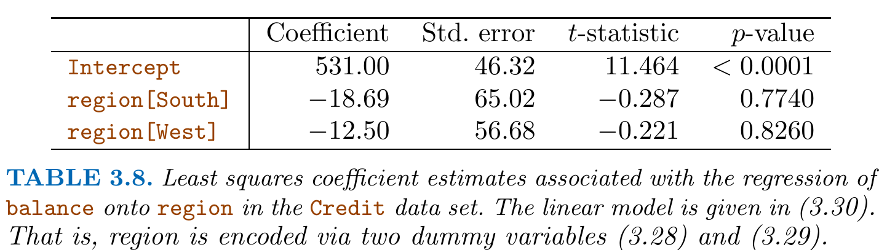
There are many different ways of coding qualitative variables besides the dummy variable approach taken here. All of these approaches lead to equivalent model fits, but the coefficients are different and have different interpretations, and are designed to measure particular contrasts. (A detailed discussion of contrasts is beyond the scope of this lecture.)
which states, for instance, that the average increase in sales associated with a one-unit increase in TV is \(\beta_1,\) regardless of the amount spent on radio.
However, this simple model may be incorrect. Suppose that there is a synergy effect, such that spending money on radio advertising actually increases the effectiveness of TV advertising.
Figure 3.5 suggests that such an effect may be present in the advertising data:
When levels of either TV or radio are low, then the true sales are lower than predicted by the linear model.
But when advertising is split between the two media, then the model tends to underestimate sales. 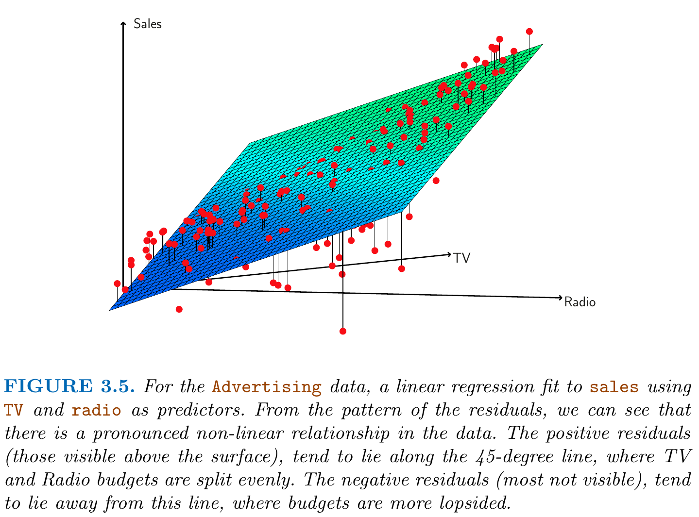
Solution: Interaction Effects:
Consider the standard linear regression model with two variables, \[
Y = \beta_0 + \beta_1 X_1 + \beta_2 X_2 + \epsilon.
\] Here each predictor \(X_1\) and \(X_2\) has a given effect, \(\beta_1\) and \(\beta_2\), on \(Y\) and this effect does not depend on the value of the other predictor. (Additive Assumption)
One way of extending this model is to include a third predictor, called an interaction term, which is constructed by computing the product of \(X_1\) and \(X_2.\) This results in the model \[
Y = \beta_0 + \beta_1 X_1 + \beta_2 X_2 + \beta_3 \overbrace{\color{red}X_1X_2}^{=X_3} + \epsilon.
\] This is a powerful extension relaxing the additive assumption. Notice that the model can now be written as \[
\begin{align*}
Y &= \beta_0 + \underbrace{(\beta_1 + \beta_3 X_2)}_{=\tilde{\beta}_1(X_2)} X_1 + \beta_2 X_2 + \epsilon,
\end{align*}
\] where the new slope parameter \(\tilde{\beta}_2(X_2)\) is a linear function of \(X_2,\) i.e. \[
\tilde{\beta}_1(X_2)=\beta_1 + \beta_3 X_2.
\]
Thus, a change in the value of \(X_2\) will change the association between \(X_1\) and \(Y.\)
A similar argument shows that a change in the value of \(X_1\) changes the association between \(X_2\) and \(Y.\)
Let us return to the Advertising example: A linear model that predicts sales using
\(\beta_3\) denotes the increase in the effectiveness of TV advertising associated with a one-unit increase in radio advertising.
Interpretation of Table 3.9:
Both separate main effects, TV and radio, are statistically significant (\(p\)-values smaller than 0.01).
Additionally, the \(p\)-value for the interaction term, TV\(\times\)radio, is extremely low, indicating that there is strong evidence for \(H_1: \beta_3\neq 0.\) In other words, it is clear that the true relationship is not additive.
Hierarchical Principle of Interaction Terms
If we include an interaction in a model, we should also include the main effects, even if the \(p\)-values associated with their coefficients are not significant.
Interactions with Qualitative Variables:
An interaction between a qualitative variable and a quantitative variable has a particularly nice interpretation.
Consider the Credit data set and suppose that we wish to predict balance using the predictors:
income (quantitative) and
student (qualitative) using a dummy variable with \[
x_{i2}=\left\{
\begin{array}{ll}
1&\text{if person $i$ is a student}\\
0&\text{if not}\\
\end{array}
\right.
\]
In the absence of an interaction term, the model takes the form 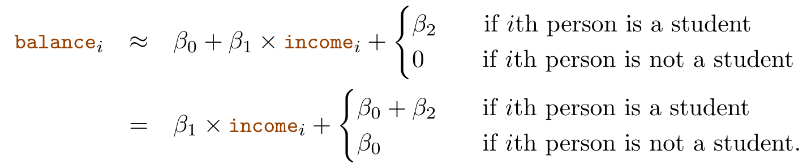
Thus, the regression lines for students and non-students have different intercepts, \(\beta_0+\beta_2\) versus \(\beta_0\), but the same slope\(\beta_1\).
This represents a potentially serious limitation of the model, since a change in income may have a very different effect on the credit card balance of a student versus a non-student.
This limitation can be addressed by adding an interaction variable, created by multiplying income with the dummy variable for student. Our model now becomes
Now we have different intercepts for students and non-students but also different slopes for these groups. 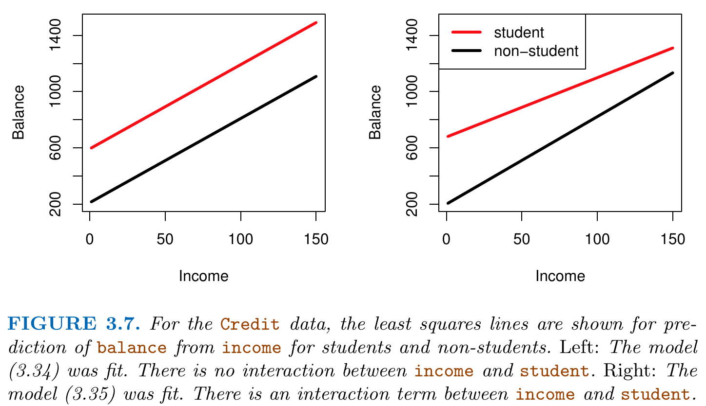
Polynomial Regression: Non-linear Relationships
Polynomial regression allows to accommodate non-linear relationships between the predictors \(X\) and the outcome \(Y.\)
For example, the points in Figure 3.8 seem to have a quadratic shape, suggesting that a model of the form
This regression model involves predicting mpg using a non-linear function of horsepower.
Important
But it is still a linear model! It’s simply a multiple linear regression model \[
Y = \beta_0 + \beta_1 X_1 + \beta_2 X_2 + \epsilon
\] with
\(X_1=\)horsepower and
\(X_2 =(\)horsepower\()^2\)
as the predictor variables.
Since this is nothing but a multiple linear regression model, we can use standard linear regression software to estimate \(\beta_0\), \(\beta_1\), and \(\beta_2\) in order to fit the (quadratic) non-linear regression function.
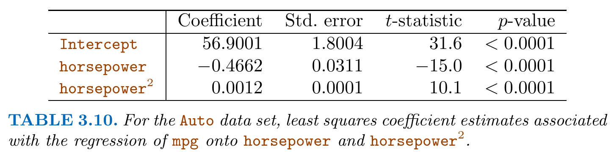
2.7.3 Detecting Potential Problems
In this chapter, we discuss the use of diagnostic plots to detect potential problems.
1. Non-linearity of the response-predictor relationships.
Diagnostic residual plots are most useful to detect possible non-linear response-predictor relationships.
library("ISLR2")data(Auto)## Gives the variable names in the Auto dataset# names(Auto)## Simple linear regressionlmobj_1<-lm(mpg~horsepower, data =Auto)## Quadratic regression lmobj_2<-lm(mpg~horsepower+I(horsepower^2), data =Auto)## Diagnostic Plotpar(mfrow =c(1,2))plot(lmobj_1, which =1)plot(lmobj_2, which =1)
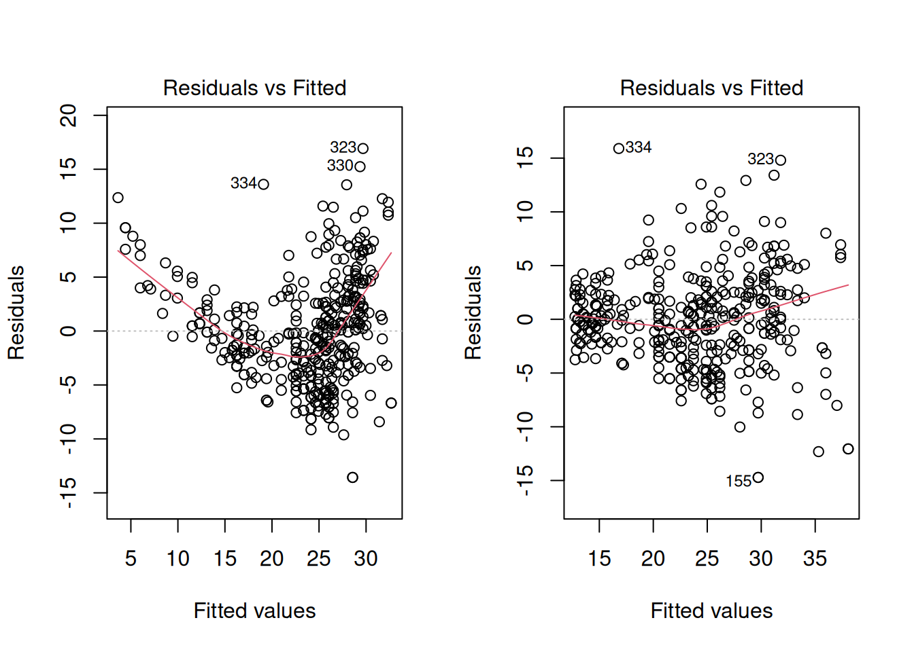
Plotting residuals versus fitted values, i.e. plotting the data pairs \[
(\underbrace{y_i - \hat{y}_i}_{=e_i}, \hat{y}_i),\quad\text{for all}\quad i=1,\dots,n
\] is a useful graphical tool for identifying non-linearity which works for the
simple linear regression model with \(\hat{y}_i=\hat{\beta}_0+\hat{\beta}_1x_{i1}\) and the
multiple linear regression model with \(\hat{y}_i=\hat{\beta}_0+\sum_{j=1}^p\hat{\beta}_jx_{ij}\)
If the residual plot indicates that there are non-linear associations in the data, then a simple approach is to use non-linear transformations of the predictors, such as \[
\log(X),\; \sqrt{X},\; \text{or}\; X^2
\] in the regression model.
2. Correlation of Error Terms
An important assumption of the linear regression model is that the error terms, \[
\epsilon_1, \epsilon_2, \dots , \epsilon_n,
\] are independent and thus uncorrelated. What does this mean? For instance, if the errors are uncorrelated, then the fact that \(\epsilon_i\) is positive provides little or no information about the sign of \(\epsilon_{i+1}.\)
Auto-correlations among the error terms typically occur in time series data. Figure 3.10 shows time-series of residuals with
no auto-correlation (\(\rho=0\))
intermediate auto-correlation (\(\rho=0.5\))
strong auto-correlation (\(\rho=0.9\))
3. Non-Constant Variance of Error Terms (Heteroskedasticity)
Another important issue is to check whether the errors can be assumed homoskedastic \[
Var(\epsilon_i|X_i) = \sigma^2,\quad\text{for all}\quad i=1,\dots,n.
\] or heteroskedastic \[
Var(\epsilon_i|X_i) = \sigma^2_i,\quad i=1,\dots,n.
\] One can identify non-constant variances (“heteroskedasticity”) in the errors, using diagnostic residual plots. Often one observes that the magnitude of the scattering of the residuals tends to increase with the fitted values. When faced with this problem, one possible solution is to transform the response \(Y\) using a concave function such as \[
\log(Y)\;\text{ or }\; \sqrt{Y}.
\] Such a transformation results in a greater amount of shrinkage of the larger responses.
## Quadratic regression lmobj_2<-lm(mpg~horsepower+I(horsepower^2), data =Auto)## Quadratic regression with transformed response log(Y)lmobj_3<-lm(I(log(mpg))~horsepower+I(horsepower^2), data =Auto)## Diagnostic Plotpar(mfrow =c(1,2))plot(lmobj_2, which =1)plot(lmobj_3, which =1)
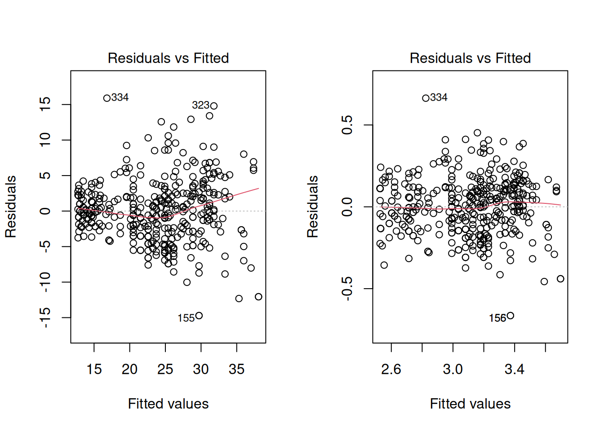
Note: In case of doubt (homoskedastic vs heteroskedastic error terms), one should use HC-robust inference, which allows for valid inference under both homoskedastic and heterskedastic errors.
4. Outliers
An outlier is a point \(i\) for which \(y_i\) is far from the value \(\hat{y}_i\) predicted by the model. Outliers can arise for a variety of reasons, such as incorrect recording of an observation during data collection.
Outliers typically have a strong effect on the \(R^2\) value since they add a very large residual to its computation.
Harmless Outlier: Figure 3.12 shows a clear outlier (observation 20) which, however, has a typical predictor value \(x_i\); i.e. the \(x_i\)-value is right in the center of all predicor values. Such outliers have little effect on the regression fit.
Harmful Outlier: Figure 3.13 shows again a clear outlier (observation 41) which, however, has a predictor value \(x_i\) that is very atypical. Such outliers are said to have large leverage giving them power to affect the regression fit considerably.
Tip
Critical outliers have both,
large residuals
and
large leverage.
5. High Leverage Points
In order to quantify an observation’s leverage, we compute the leverage statistic\(h_i\) for each observation \(i=1,\dots,n.\) A large value of this statistic indicates an observation with high leverage.
In the case of the simple linear regression model\[
h_i = \frac{1}{n} + \frac{(x_i-\bar{x})^2}{\sum_{j=1}^n(x_{j}-\bar{x})^2}.
\]
In the case of the multiple linear regression model, \(h_i\) is the \(i\)th diagonal value of the \((n\times n)\)-dimensional “hat-matrix” \[
H=X(X^{\top}X)^{-1}X^{\top}.
\]
The leverage statistic \(h_i\) is always between \(1/n\) and \(1\)
The average leverage for all the observations is equal to \[
\bar{h}=\frac{1}{n}\sum_{i=1}^n h_i=(p + 1)/n.
\]
If a given observation has a leverage statistic \(h_i\) that greatly exceeds the average leverage value, \((p+1)/n,\) then we may suspect that the corresponding point has high leverage.
6. Collinearity
Collinearity refers to the situation in which two or more predictor variables are closely related to one another.
In the following example, the variables Age and Limit are essentially unrelated, but the variables Rating and Limit are closely related to one another.
library("ISLR2")data(Credit)# names(Credit)par(mfrow=c(1,2))plot(y =Credit$Age, x =Credit$Limit, main ="No Collinearity", ylab ="Age", xlab ="Limit")plot(y =Credit$Rating, x =Credit$Limit, main ="Strong Collinearity", ylab ="Rating", xlab ="Limit")
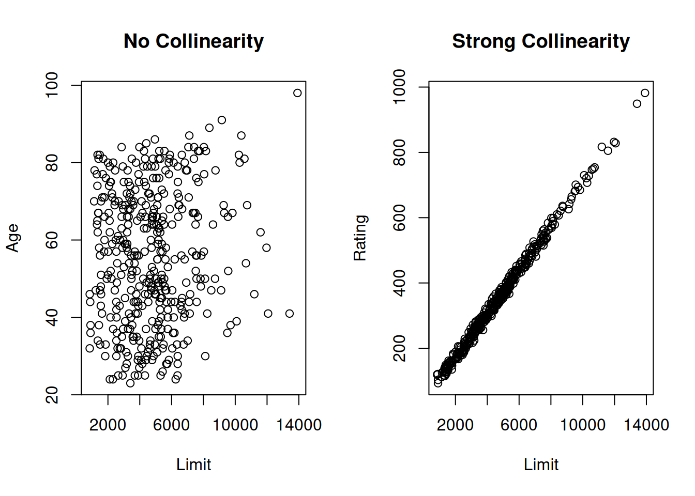
The left panel of Figure 3.15 shows that, in the case of unrelated predictors (Age and Limit), the least squares problem has a minimum \((\hat\beta_{Age},\hat\beta_{Limit})\) that is well identified since the minimum is well defined.
The right panel of Figure 3.15 shows that, in the case of collinear predictors (Rating and Limit), the least squares problem has a minimum \((\hat\beta_{Rating},\hat\beta_{Limit})\) that is not well identified: One can substitute values of \(\hat\beta_{Limit}\) for \(\hat\beta_{Rating}\) ending up in new pairs \((\hat\beta_{Rating},\hat\beta_{Limit})\) with basically the same RSS-value than the original value than it is achieved by the minimizer \((\hat\beta_{Rating},\hat\beta_{Limit})\).
Table 3.11 demonstrates that this identification problem between the collinear predictors (Rating and Limit) causes a variance inflation in the variance (square of standard error) of the estimators \(\hat\beta_{Rating}\) and \(\hat\beta_{Limit}.\)
In Model 1: \(\hat\beta_{Limit} = 0.005^2=0.000025\)
In Model 2: \(\hat\beta_{Rating} = 0.064^2=0.004096\)
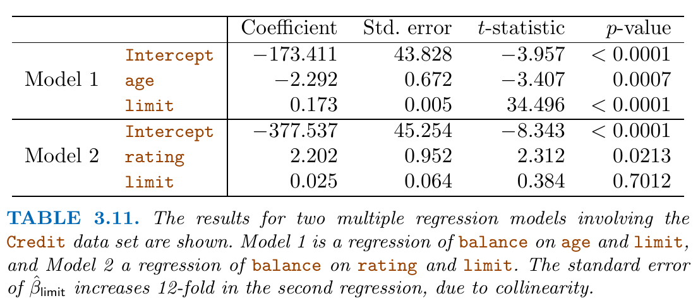
We call this situation multicollinearity.
To detect multicollinearity issues, one can use the variance inflation factor (VIF) \[
\operatorname{VIF}(\hat{\beta}_j)=\frac{1}{1-R^2_{X_j|X_-j}},
\] where \(R^2_{X_j|X_-j}\) is the \(R^2\) from a regression of \(X_j\) onto all of the other predictors.
If \(R^2_{X_j|X_-j}\) is close to one, then multicollinearity is present, and \(\operatorname{VIF}(\hat{\beta}_j)\) will be large.
In the Credit data, one gets for the predictors age, rating, and limit the following VIF values:
1.01 (age)
160.67 (rating)
160.59 (limit)
Thus, as we suspected, there is considerable collinearity in the data!
Possible solutions:
Drop one of the problematic variables from the regression. This can usually be done without much compromise to the regression fit, since the presence of collinearity implies that the information that this variable provides about the response is redundant in the presence of the other variables. Caution: In econometrics, dropping control variables is generally not a good idea since control variables are there to rule out possible issues with omitted variables biases.
Combine the collinear variables together into a single predictor. For instance, we might take the average of standardized versions of limit and rating in order to create a new variable that measures credit worthiness.
Use a different estimation procedure like ridge regression.
Live with it. At least you know where the large stand errors are coming from.
2.8 Comparison: Linear Regression vs. K-NN Regression
Linear regression is an example of a parametric approach because it assumes a linear model form for \[
f(X_i)=\beta_0 + \beta_1 X_{i1} + \dots + \beta_p X_{ip}
\]
Advantages of parametric approaches:
Typically easy to fit
Simple interpretation
Simple inference
Disadvantages of parametric approaches:
The parametric model assumption can be far from true; i.e. \[
f(X_i) \neq \beta_0 + \beta_1 X_{i1} + \dots + \beta_p X_{ip}
\]
Alternative:
Non-parametric methods such as K-nearest neighbors regression since non-parametric approaches do not explicitly assume a parametric form for \(f(X).\)
2.8.1 K-Nearest Neighbors (K-NN) Regression
Let \(x_0\in\mathbb{R}^p\) denote a certain (multivariate) predictor value at which we want to estimate \[
f(x_0)
\] and let \(K\) denote the number of closest predictior value neighbors of \(x_0.\)
KNN regression regression then computes the estimate \[
\hat{f}_K(x_0)
\] in two steps:
Compute the distances between \(x_0\) and all training data predictior values \(X_1,\dots,X_{n_{Train}}\)\[
d(x_0,X_1),d(x_0,X_2)\dots,d(x_0,X_{n_{Train}}).
\] Use these distances to identify the \(K\) training data predictior values \(X_1,\dots,X_{n_{Train}}\) that are closest to \(x_0\) and collect their indices the index set \(\mathcal{N}_0,\) where \[
\begin{align*}
\mathcal{N}_0
& =\{i\in\{1,2,\dots,n_{Train}\} \; |\; d(x_0,X_i)\text{ is one of the $K$ smallest distances}\}
\end{align*}
\] such that \(\mathcal{N}_0\subset\{1,2,\dots,n_{Train}\}\) with \(|\mathcal{N}_0|=K.\)
Estimate \(f(x_0)\) using the sample average of all the training responses \(y_i\) with \(i\in\mathcal{N}_0,\) i.e. \[
\hat{f}_K(x_0)=\frac{1}{K}\sum_{i\in\mathcal{N}_0}y_i.
\]
The above two steps are then repeated for all predictior values \(x_0\in\mathbb{R}^p\) of interest.
The performance of the estimator \(\hat{f}_K(x_0)\) depends on
the choice of \(K\) and
the choice of distance \(d\)
For real valued predictors, \(x_0,X_i\in\mathbb{R}^p\) a usual choice is the Euclidian distance \[
d_E(x_0, X_i) = ||x_0 - X_i||^2 = \sum_{j=1}^p (x_{0j} - X_{ij})^2.
\]
Use Standardized Predictors!
Typically, it is important to compute the distances with respect to the standardized (centering, and scaling to unit variance) predictor variables; i.e. \[
d^*_E(x_0, X_i) = ||x^*_0 - X^*_i||^2 = \sum_{j=1}^p (x^*_{0j} - X^*_{ij})^2,
\] where \[
x^*_{0j} = \frac{x_{0j} - \bar{X}_{j}}{\sqrt{\frac{1}{n_{Train}}\sum_{i=1}^{n_{Train}}(X_{ij}-\bar{X}_{j})^2}}
\] and \[
X^*_{ij} = \frac{X_{ij} - \bar{X}_{j}}{\sqrt{\frac{1}{n_{Train}}\sum_{i=1}^{n_{Train}}(X_{ij}-\bar{X}_{j})^2}}
\] with \(\bar{X}_{j} = \frac{1}{n_{Train}}\sum_{i=1}^{n_{Train}}X_{ij}.\)
Otherwise, the distance values could be dominated by one of the \(p\) predictors.
E.g. when one predictor is age (values between \(0\) and \(99\)) and another predictor is yearly income (values between \(0\) and \(12,000,000\)), then the differences in income will dominate the differences in age only because of the different scales.
The left panel of Figure 3.16 shows the estimation result for \(K=1\) and the right panel for \(K=9.\)
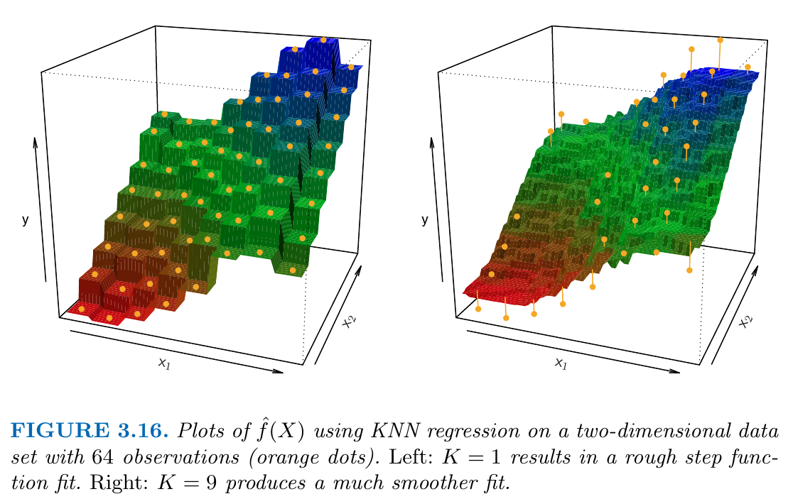
In general, the optimal value for \(K\) will depend on the bias-variance tradeoff, which we introduced in ?sec-SL:
A small value for \(K\) provides the most flexible fit, which will have
high variance \[
Var(\hat{f}_K(x_0)) \;\text{ is large}
\]
The low bias is due to the fact that the prediction \(\hat{f}_K(x_0)\) at a given \(x_0\) only uses a few (e.g. \(K=1\)) close neighbors for which we can expect that they are “good neighbors:” Close neighbors are good neighbors since \(|f(x_0) - f(X_i)|\approx 0.\)
The high variance is due to the fact that the prediction \(\hat{f}_K(x_0)\) at a given \(x_0\) only depends on a small number of \(K\) observations (e.g. \(K=1\)) such that the law of larger numbers had no chance to reduce variance.
A large value of \(K\) provides a less flexible fit, which will have
large bias \[
|\operatorname{Bias}(\hat{f}_K(x_0))| = |E(\hat{f}_K(x_0)) - f(x_0)| \;\text{ is large}
\]
low variance \[
Var(\hat{f}_K(x_0)) \;\text{ is small}
\]
The large bias is due to the fact that the prediction \(\hat{f}_K(x_0)\) at a given \(x_0\) uses observations from a larger neighborhood (e.g. \(K=30\)) which increases the chance of considering rather distant \(||x_0-X_i||\gg 0\) and thus “bad” neigboors. Distant neighbors are bad neighbors since \(|f(x_0) - f(X_i)|\gg 0.\)
The low variance is due to the fact that the prediction \(\hat{f}_K(x_0)\) at a given \(x_0\) depends on a larger number of \(K\) observations (e.g. \(K=30\)) such that the law of larger numbers has a chance to reduce variance.
An optimal value of \(K\) can be chosen using, e.g., cross-validation; see Chapter 6.
Generally, the parametric approach will outperform the non-parametric approach if the parametric form that has been selected is close to the true form of \(f\) and vice versa.
Figure 3.17 provides an example with data generated from a one-dimensional linear regression model:
black solid lines: true \(f(x)\)
blue curves: KNN fits \(\hat{f}_K(x)\) using \(K = 1\) (left plot) and \(K = 9\) (right plot).
Observations:
The KNN fit \(\hat{f}_K(x)\) using \(K = 1\) is far too wiggly
The KNN fit \(\hat{f}_K(x)\) using \(K = 9\) is much closer to the true \(f(X).\)
However, since the true regression function is here linear, it is hard for a non-parametric approach to compete with simple linear regression: a non-parametric approach incurs a cost in variance that is here not offset by a reduction in bias. 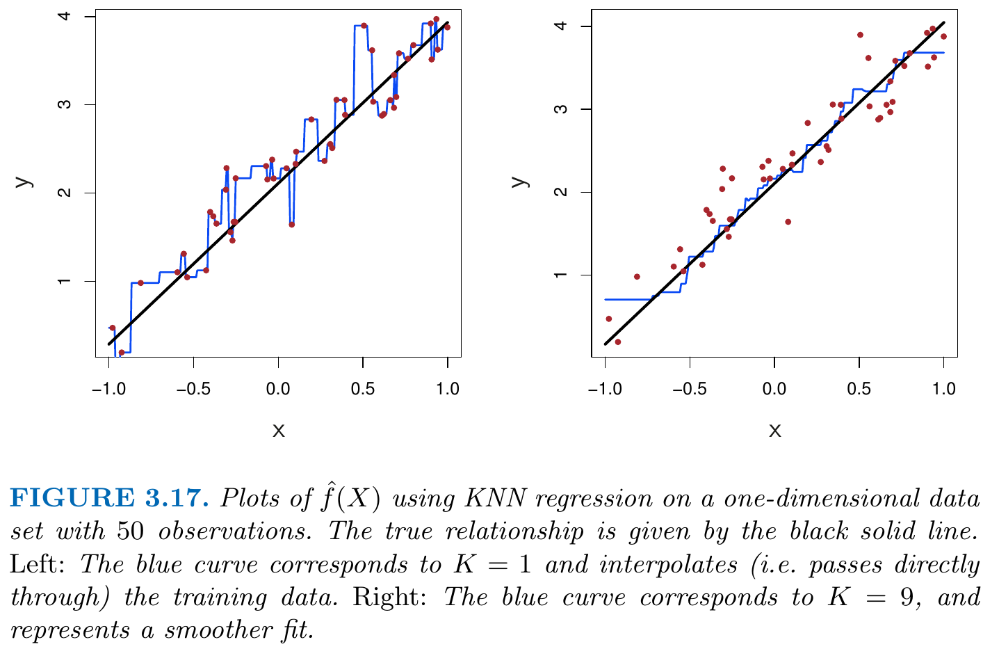
The blue dashed line in the left-hand panel of Figure 3.18 represents the simple linear regression fit to the same data. It is almost perfect.
The right-hand panel of Figure 3.18 reveals that linear regression outperforms KNN for this data across different choices of \(K=1,2,\dots,10.\) 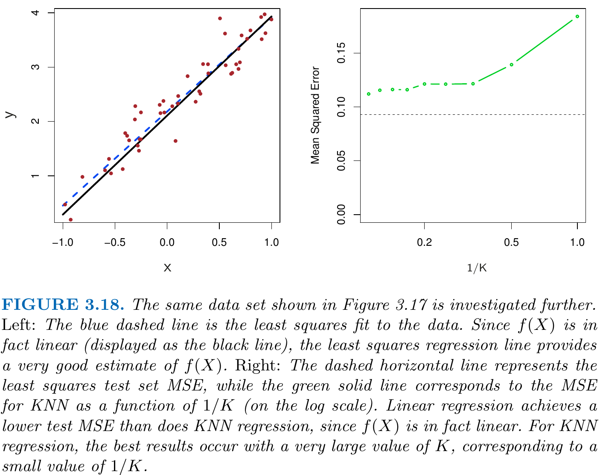
Figure 3.19 displays a non-linear situations in which KNN performs much better than simple linear regression.
Curse of Dimensionality
Unfortunately, in higher dimensions, KNN often performs worse than simple/multiple linear regression, since non-parametric approaches suffer from the curse of dimensionality.
Figure 3.20 considers the same strongly non-linear situation as in the second row of Figure 3.19, except that we have added additional noise (i.e. redundant) predictors that are not associated with the response.
When \(p = 1\) or \(p = 2,\) KNN outperforms linear regression.
But for \(p = 3\) the results are mixed, and for \(p\geq 4\) linear regression is superior to KNN.
Observations:
When \(p=1\), a sample size of \(n=50\) can provide enough information to estimate \(f(X)\) accurately using non-parametric methods since the \(K\) nearest neighbors can actually be close to a given test observation \(x_0.\)
However, when spreading the \(n=50\) data points over a large number of, for instance, \(p=20\) dimensions, the \(K\) nearest neighbors tend to become far away from \(x_0\) causing a large bias.
2.9 Self-Study: Exercises
Prepare the following exercises of Chapter 3 in our course textbook ISLR:
Exercise 1
Exercise 2
Exercise 3
Exercise 8
Exercise 9
Solutions
Exercise 1
1 a) Describe the null hypotheses to which the \(p\)-values given in Table 3.4 correspond.
1 b) Explain what conclusions you can draw based on these \(p\)-values. Your explanation should be phrased in terms of sales, TV, radio, and newspaper, rather than in terms of the coefficients of the linear model.
Answers:
1 a) In Table 3.4, the null hypothesis for TV is that in the presence of radio ads and newspaper ads, TV ads have no effect on sales. Similarly, the null hypothesis for radio is that in the presence of TV ads and newspaper ads, radio ads have no effect on sales.
1 b) The low p-values of TV and radio allow us to reject the “no effect” null hypotheses for TV and radio. Hence, we believe that
TV ads have an effect on sales in the presence of radio and newspaper ads.
radio ads have an effect on sales in the presence of TV and newspaper ads.
The high p-value of newspaper does not allow us to reject the “no effect” null-hypothesis. This constitutes an inconclusive result and only says that the possible effects of newspaper ads are not large enough to stand out from the estimation errors.
Remember
An insignificant hypothesis test result is never informative about whether the tested null hypothesis is true. We do not have an error-control for falsely accepting the null-hypothesis, i.e. for type-II-errors. We only have an error-control (by the significance level) for falsely rejecting the null-hypothesis, i.e. for type-I-errors.
Exercise 2
Carefully explain the main difference between the KNN classifier and KNN regression methods.
Answer:
KNN classifier and KNN regression methods are closely related in formula. However, the final result of KNN classifier is the classification output for \(Y\) (qualitative), given a certain predictor \(x_0\), where as the output for a KNN regression predicts the quantitative value for \(f(x_0)\), given a certain predictor \(x_0\).
Exercise 3
Suppose we have a data set with five predictors:
\(X_1 =GPA\)
\(X_2 = IQ\)
\(X_3 = Gender\) (\(1\) for Female and \(0\) for Male)
\(X_4 =\) Interaction between \(GPA\) and \(IQ\)
\(X_5 =\) Interaction between \(GPA\) and \(Gender\)
The response variable (in thousands of dollars) is defined as:
\(Y =\) starting salary after graduation
Suppose we use least squares to fit the model, and get:
3 c) True or false: Since the coefficient for the GPA\(\times\)IQ interaction term is very small, there is very little evidence of an interaction effect. Justify your answer.
Answer:
False. We must examine the \(p\)-value (or the \(t\)-statistic) of the regression coefficient to determine if the interaction term is statistically significant or not.
Exercise 8
This question involves the use of simple linear regression on the Auto data set.
8 a) Use the lm() function to perform a simple linear regression with mpg as the response and horsepower as the predictor. Use the summary() function to print the results.
library("ISLR2")data("Auto")# Perform linear regressionlmObj_1<-lm(mpg~horsepower, data=Auto)# Use summary function to print the resultssummary(lmObj_1)
Call:
lm(formula = mpg ~ horsepower, data = Auto)
Residuals:
Min 1Q Median 3Q Max
-13.5710 -3.2592 -0.3435 2.7630 16.9240
Coefficients:
Estimate Std. Error t value Pr(>|t|)
(Intercept) 39.935861 0.717499 55.66 <2e-16 ***
horsepower -0.157845 0.006446 -24.49 <2e-16 ***
---
Signif. codes: 0 '***' 0.001 '**' 0.01 '*' 0.05 '.' 0.1 ' ' 1
Residual standard error: 4.906 on 390 degrees of freedom
Multiple R-squared: 0.6059, Adjusted R-squared: 0.6049
F-statistic: 599.7 on 1 and 390 DF, p-value: < 2.2e-16
Comment on the output. For example:
i) Is there a relationship between the predictor and the response?
Answer:
Yes, there is. The predictor horsepower has a statistically significant (\(p<0.001\)) linear relationship with the response.
ii) How strong is the relationship between the predictor and the response?
Answer:
Statistical significance does not necessarily mean a practically strong or important relationship.
To quantify the strength of the relationship between the predictor and the response, we can look at the following quantities:
Residual Standard Error (RSE) (estimate of the standard deviation of \(\epsilon\)) in comparison to the RSE of the trivial linear regression model with only an intercept.
The \(R^2\) Statistic (the proportion of variance explained by the model)
The \(F\)-Statistic
The Residual Standard Error (RSE) of the regression model with intercept and horsepower as predictors is given by:
## RSE of lm(mpg ~ horsepower):RSS<-sum(resid(lmObj_1)^2)n<-length(resid(lmObj_1))RSE<-sqrt(RSS/(n-2))round(RSE, 3)
This RSE value is considerable smaller than the RSE of a model with only an intercept:
lmObj_onlyIntercept<-lm(mpg~+1, data =Auto)RSS_onlyIntercept<-sum(resid(lmObj_onlyIntercept)^2)n<-length(resid(lmObj_onlyIntercept))RSE_onlyIntercept<-sqrt(RSS_onlyIntercept/(n-1))round(RSE_onlyIntercept, 3)
[1] 7.805
Thus, the larger model with horsepower included explains more of the variances in the response variable mpg. Including horsepower as a predictor reduces the RSE by ((RSE_onlyIntercept - RSE)/RSE_onlyIntercept)*100 %; i.e. by 37.15%.
is much larger than \(1\) which means that the linear regression model with intercept and horsepower fits the data significantly better than the trivial regression model with only an intercept.
iii) Is the relationship between the predictor and the response positive or negative?
Answer:
The relationship is negative, as we can see from the parameter estimate for horsepower
Looking at the smoothing line of the residuals (\(e_i=y_i−\hat{y}_i\)) vs. the fitted values (\(\hat{y}_i\)), there is a strong pattern in the residuals, indicating non-linearity. You can see evidence of this also in the scatter plot in the answer for question 8 b).
There also appears to be non-constant variance in the error terms (heteroscedasticity), but this may be corrected to an extent when trying a quadratic fit. If not, transformations such as \(log(y)\) or \(\sqrt{y}\) can shrink larger responses by a greater amount and reduce this issue.
There are some observations with large standardized residuals & high leverage (hence, high Cook’s Distance) that we need to review.
Exercise 9
This question involves the use of multiple linear regression on the Auto data set.
9 a) Produce a scatterplot matrix which includes all of the variables in the data set.
9 b) Compute the matrix of correlations between the variables using the function cor(). You will need to exclude the name variable, which is qualitative.
9 c) Use the lm() function to perform a multiple linear regression with mpg as the response and all other variables except name as the predictors. Use the summary() function to print the results. Comment on the output by answering the below questions 9 c i) to 9 c iii).
Answer:
# Perform multiplie linear regressionfit.lm<-lm(mpg~.-name, data=Auto)# Print resultssummary(fit.lm)
Call:
lm(formula = mpg ~ . - name, data = Auto)
Residuals:
Min 1Q Median 3Q Max
-9.5903 -2.1565 -0.1169 1.8690 13.0604
Coefficients:
Estimate Std. Error t value Pr(>|t|)
(Intercept) -17.218435 4.644294 -3.707 0.00024 ***
cylinders -0.493376 0.323282 -1.526 0.12780
displacement 0.019896 0.007515 2.647 0.00844 **
horsepower -0.016951 0.013787 -1.230 0.21963
weight -0.006474 0.000652 -9.929 < 2e-16 ***
acceleration 0.080576 0.098845 0.815 0.41548
year 0.750773 0.050973 14.729 < 2e-16 ***
origin 1.426141 0.278136 5.127 4.67e-07 ***
---
Signif. codes: 0 '***' 0.001 '**' 0.01 '*' 0.05 '.' 0.1 ' ' 1
Residual standard error: 3.328 on 384 degrees of freedom
Multiple R-squared: 0.8215, Adjusted R-squared: 0.8182
F-statistic: 252.4 on 7 and 384 DF, p-value: < 2.2e-16
9 c i) Is there a relationship between the predictors and the response?
Answer:
Yes, there is a relationship between the predictors and the response. By testing the null hypothesis of whether all (except intercept) the regression coefficients are zero (i.e. H\(_0\): \(\beta_1=\dots=\beta_7=0\)), we can see that the \(F\)-statistic is big and its \(p\)-value is close to zero, indicating evidence against the null hypothesis.
9 c ii) Which predictors appear to have a statistically significant relationship to the response?
Answer:
Looking at the \(p\)-values associated with each predictor’s \(t\)-statistic, we see that displacement, weight, year, and origin have a statistically significant relationship, while cylinders, horsepower, and acceleration do not.
Caution: This consideration neglects issues due to multiple testing. When testing at the significance level \(\alpha=0.05\), then each single test has a type I error (false H\(_0\) rejections) rate of up to \(5\%\). These type I error rates accumulate since we consider seven hypothesis tests simultaneously, and thus the probability of seeing one type I error among the seven tests is up to \(7\cdot 5\%=35\%\). So is quite likely to see one type I error.
Bonferroni correction for multiple testing: To determine if any of the seven predictors is statistically significant, the corresponding \(p\)-value must be smaller than \(\alpha/7\). For instance, with \(\alpha/7=0.05/7\approx 0.007\), only weight, year, and origin have a statistically significant relationships to the response.
9 c iii) What does the coefficient for the year variable suggest?
Answer:
The regression coefficient for year suggests that, on average, one year later year-of-construction is associated with an increased mpg by \(0.75\), when holding every other predictor value constant.
9 d) Use the plot() function to produce diagnostic plots of the linear regression fit. Comment on any problems you see with the fit. Do the residual plots suggest any unusually large outliers? Does the leverage plot identify any observations with unusually high leverage?
The “Residuals vs Fitted” plot (1st plot) shows some systematic deviations of the residuals from \(0\). The reason is that we are imposing a straight “line” (better hyper plane) fit for the conditional mean function \(E[Y|X]=f(X)\) which appears non-linear here. This results in a systematic underestimation of the true conditional mean function for large and small fitted values \(\hat{y}=\hat\beta_0+\hat\beta_1x_1+\dots+\hat\beta_px_p\).
The “Normal Q-Q” plot (2nd plot) suggests non-normally distributed residuals–particularly the upper tail deviates from that of a normal distribution.
The “Residuals vs Leverage” plot (3rd plot) shows that there are some potential outliers that we can see when: standardized residuals are below \(-2\) or above \(+2\). Moreover, the plot shows also potentially problematic “high-leverage” points with leverage values heavily exceeding the rule-of-thumb threshold \((p+1)/n=8/392=0.02\). All points with simultaneously high-leverages and large absolute standardized residuals should be handled with care since these may distort the estimation.
The “Scale-Location” plot (4th plot) shows is rather inconclusive about heteroscedasticity. However the “Residuals vs Fitted” plot (1st plot)shows some clear sign of heteroscedastic residuals.
9 e) Use the * and : symbols to fit linear regression models with interaction effects. Do any interactions appear to be statistically significant?
Call:
lm(formula = mpg ~ horsepower + cylinders + year + weight * displacement,
data = Auto)
Residuals:
Min 1Q Median 3Q Max
-9.7530 -1.8228 -0.0602 1.5780 12.6133
Coefficients:
Estimate Std. Error t value Pr(>|t|)
(Intercept) -2.210e+00 3.819e+00 -0.579 0.56316
horsepower -3.396e-02 9.560e-03 -3.552 0.00043 ***
cylinders 2.072e-01 2.914e-01 0.711 0.47756
year 7.858e-01 4.555e-02 17.250 < 2e-16 ***
weight -1.084e-02 6.346e-04 -17.076 < 2e-16 ***
displacement -7.947e-02 9.905e-03 -8.023 1.26e-14 ***
weight:displacement 2.431e-05 2.141e-06 11.355 < 2e-16 ***
---
Signif. codes: 0 '***' 0.001 '**' 0.01 '*' 0.05 '.' 0.1 ' ' 1
Residual standard error: 2.976 on 385 degrees of freedom
Multiple R-squared: 0.8568, Adjusted R-squared: 0.8546
F-statistic: 384.1 on 6 and 385 DF, p-value: < 2.2e-16
Note that there is a difference between using A:B and A*B when running a regression. While the first includes only the interaction term between the variable A and B, the second one also includes the stand-alone variables A and B.
Generally, you should follow the hierarchical principle for interaction effects: If we include an interaction in a model, we should also include the main effects, even if the \(p\)-values associated with their coefficients are not significant.
9 f)
Try a few different transformations of the variables, such as \(\log(X)\), \(\sqrt{X}\), \(X^2\). Comment on your findings.
No clear issues of systematic under/over estimations for given fitted values.
No clear issues of heteroscedastic residuals.
Normality assumption may be wrong, but this isn’t problematic since we have a large dataset, such that a central limit theorem will make the estimators asymptotically normal distributed.
One large leverage point which, however, has a small residual.
2.10 Self-Study: R-Lab Linear Regression
2.10.1 Libraries
The library() function is used to load libraries, or groups of functions and data sets that are not included in the base R distribution. Basic functions that perform least squares linear regression and other simple analyses come standard with the base distribution, but more exotic functions require additional libraries.
Here we load the MASS package, which is a very large collection of data sets and functions. We also load the ISLR2 package, which includes the data sets associated with this book.
If you receive an error message when loading any of these libraries, it likely indicates that the corresponding library has not yet been installed on your system. Some libraries, such as MASS, come with R and do not need to be separately installed on your computer. However, other packages, such as ISLR2, must be downloaded the first time they are used.
This can be done, for instance, at the R command line via install.packages("ISLR2") function. This installation only needs to be done the first time you use a package. However, the library() function must be called within each R session.
2.10.2 Simple Linear Regression
The ISLR2 library contains the Boston data set, which records medv (median house value) for \(506\) census tracts in Boston. We will seek to predict medv using \(12\) predictors such as rmvar (average number of rooms per house), age (average age of houses), and lstat (percent of households with low socioeconomic status).
To find out more about the data set, we can type ?Boston.
We will start by using the lm() function to fit a simple linear regression model, with medv as the response and lstat as the predictor. The basic syntax is lm(y ~ x, data), where y is the response, x is the predictor, and data is the data set in which these two variables are kept.
If we type lm.fit, some basic information about the model is output. For more detailed information, we use summary(lm.fit). This gives us \(p\)-values and standard errors for the coefficients, as well as the \(R^2\) statistic and \(F\)-statistic for the model.
For instance, the observed value of the 95% confidence interval associated with a lstat value of \(10,\) i.e. associated with \[
\beta_0 + \beta_1 \cdot 10
\] is \[
\operatorname{CI}_{\beta_0 + \beta_1 \cdot 10,obs}=[24.47, 25.63]
\] with observed prediction value \[
25.05335 = \hat\beta_0 + \hat\beta_1 \cdot 10.
\]
We will now plot medv and lstat along with the least squares regression line using the plot() and abline() functions.
There is some evidence for non-linearity in the relationship between lstat and medv. We will explore this issue later in this lab.
The abline() function can be used to draw any line, not just the least squares regression line. To draw a line with intercept a and slope b, we type abline(a, b). Below we experiment with some additional settings for plotting lines and points. The lwd = 3 command causes the width of the regression line to be increased by a factor of 3; this works for the plot() and lines() functions also. We can also use the pch option to create different plotting symbols.
plot(lstat, medv)abline(lm.fit, lwd =3, col ="red")
Next we examine some diagnostic plots. Four diagnostic plots are automatically produced by applying the plot() function directly to the output from lm(). In general, this command will produce one plot at a time, and hitting Enter will generate the next plot. However, it is often convenient to view all four plots together. We can achieve this by using the par() and mfrow() functions, which tell R to split the display screen into separate panels so that multiple plots can be viewed simultaneously. For example, par(mfrow = c(2, 2)) divides the plotting region into a \(2 \times 2\) grid of panels.
Alternatively, we can compute the residuals from a linear regression fit using the residuals() function. The function rstudent() will return the studentized residuals, and we can use this function to plot the residuals against the fitted values.
The which.max() function identifies the index of the largest element of a vector. In this case, it tells us which observation has the largest leverage statistic.
The sort() function can be used to sort and print values of a vector like hatvalues(lm.fit).
2.10.3 Multiple Linear Regression
In order to fit a multiple linear regression model using least squares, we again use the lm() function. The syntax lm(y ~ x1 + x2 + x3) is used to fit a model with three predictors, x1, x2, and x3. The summary() function now outputs the regression coefficients for all the predictors.
lm.fit<-lm(medv~lstat+age, data =Boston)summary(lm.fit)
Call:
lm(formula = medv ~ lstat + age, data = Boston)
Residuals:
Min 1Q Median 3Q Max
-15.981 -3.978 -1.283 1.968 23.158
Coefficients:
Estimate Std. Error t value Pr(>|t|)
(Intercept) 33.22276 0.73085 45.458 < 2e-16 ***
lstat -1.03207 0.04819 -21.416 < 2e-16 ***
age 0.03454 0.01223 2.826 0.00491 **
---
Signif. codes: 0 '***' 0.001 '**' 0.01 '*' 0.05 '.' 0.1 ' ' 1
Residual standard error: 6.173 on 503 degrees of freedom
Multiple R-squared: 0.5513, Adjusted R-squared: 0.5495
F-statistic: 309 on 2 and 503 DF, p-value: < 2.2e-16
The Boston data set contains 12 variables, and so it would be cumbersome to have to type all of these in order to perform a regression using all of the predictors. Instead, we can use the following short-hand:
We can access the individual components of a summary object by name (type ?summary.lm to see what is available). Hence summary(lm.fit)$r.sq gives us the \(R^2\), and summary(lm.fit)$sigma gives us the RSE. The vif() function, part of the car package, can be used to compute variance inflation factors. Most VIF’s are low to moderate for this data. The car package is not part of the base R installation so it must be downloaded the first time you use it via the install.packages() function in R.
chas black crim ptratio rm zn lstat age
1.073995 1.348521 1.792192 1.799084 1.933744 2.298758 2.941491 3.100826
dis indus nox rad tax
3.955945 3.991596 4.393720 7.484496 9.008554
What if we would like to perform a regression using all of the variables but one? For example, in the above regression output, age has a high \(p\)-value. So we may wish to run a regression excluding this predictor. The following syntax results in a regression using all predictors except age.
lm.fit1<-lm(medv~.-age, data =Boston)summary(lm.fit1)
It is easy to include interaction terms in a linear model using the lm() function. The syntax lstat:black tells R to include an interaction term between lstat and black. The syntax lstat * age simultaneously includes lstat, age, and the interaction term lstat\(\times\)age as predictors; it is a shorthand for lstat + age + lstat:age. %We can also pass in transformed versions of the predictors.
Call:
lm(formula = medv ~ lstat * age, data = Boston)
Residuals:
Min 1Q Median 3Q Max
-15.806 -4.045 -1.333 2.085 27.552
Coefficients:
Estimate Std. Error t value Pr(>|t|)
(Intercept) 36.0885359 1.4698355 24.553 < 2e-16 ***
lstat -1.3921168 0.1674555 -8.313 8.78e-16 ***
age -0.0007209 0.0198792 -0.036 0.9711
lstat:age 0.0041560 0.0018518 2.244 0.0252 *
---
Signif. codes: 0 '***' 0.001 '**' 0.01 '*' 0.05 '.' 0.1 ' ' 1
Residual standard error: 6.149 on 502 degrees of freedom
Multiple R-squared: 0.5557, Adjusted R-squared: 0.5531
F-statistic: 209.3 on 3 and 502 DF, p-value: < 2.2e-16
2.10.5 Non-linear Transformations of the Predictors
The lm() function can also accommodate non-linear transformations of the predictors. For instance, given a predictor \(X\), we can create a predictor \(X^2\) using I(X^2). The function I() is needed since the ^ has a special meaning in a formula object; wrapping as we do allows the standard usage in R, which is to raise X to the power 2. We now perform a regression of medv onto lstat and lstat^2.
Call:
lm(formula = medv ~ lstat + I(lstat^2))
Residuals:
Min 1Q Median 3Q Max
-15.2834 -3.8313 -0.5295 2.3095 25.4148
Coefficients:
Estimate Std. Error t value Pr(>|t|)
(Intercept) 42.862007 0.872084 49.15 <2e-16 ***
lstat -2.332821 0.123803 -18.84 <2e-16 ***
I(lstat^2) 0.043547 0.003745 11.63 <2e-16 ***
---
Signif. codes: 0 '***' 0.001 '**' 0.01 '*' 0.05 '.' 0.1 ' ' 1
Residual standard error: 5.524 on 503 degrees of freedom
Multiple R-squared: 0.6407, Adjusted R-squared: 0.6393
F-statistic: 448.5 on 2 and 503 DF, p-value: < 2.2e-16
The near-zero \(p\)-value associated with the quadratic term suggests that it leads to an improved model. We use the anova() function to further quantify the extent to which the quadratic fit is superior to the linear fit.
Analysis of Variance Table
Model 1: medv ~ lstat
Model 2: medv ~ lstat + I(lstat^2)
Res.Df RSS Df Sum of Sq F Pr(>F)
1 504 19472
2 503 15347 1 4125.1 135.2 < 2.2e-16 ***
---
Signif. codes: 0 '***' 0.001 '**' 0.01 '*' 0.05 '.' 0.1 ' ' 1
Here Model 1 represents the linear submodel containing only one predictor, lstat, while Model 2 corresponds to the larger quadratic model that has two predictors, lstat and lstat^2. The anova() function performs a hypothesis test comparing the two models. The null hypothesis is that the two models fit the data equally well, and the alternative hypothesis is that the full model is superior.
Here the \(F\)-statistic is \(135\) and the associated \(p\)-value is virtually zero. This provides very clear evidence that the model containing the predictors lstat and lstat^2 is far superior to the model that only contains the predictor lstat.
This is not surprising, since earlier we saw evidence for non-linearity in the relationship between medv and lstat.
then we see that when the lstat^2 term is included in the model, there is little discernible pattern in the residuals.
In order to create a cubic fit, we can include a predictor of the form I(X^3). However, this approach can start to get cumbersome for higher-order polynomials. A better approach involves using the poly() function to create the polynomial within lm(). For example, the following command produces a fifth-order polynomial fit:
This suggests that including additional polynomial terms, up to fifth order, leads to an improvement in the model fit! However, further investigation of the data reveals that no polynomial terms beyond fifth order have significant \(p\)-values in a regression fit.
By default, the poly() function orthogonalizes the predictors: this means that the features output by this function are not simply a sequence of powers of the argument. However, a linear model applied to the output of the poly() function will have the same fitted values as a linear model applied to the raw polynomials (although the coefficient estimates, standard errors, and p-values will differ). In order to obtain the raw polynomials from the poly() function, the argument raw = TRUE must be used.
Of course, we are in no way restricted to using polynomial transformations of the predictors. Here we try a log transformation.
Call:
lm(formula = medv ~ log(rm), data = Boston)
Residuals:
Min 1Q Median 3Q Max
-19.487 -2.875 -0.104 2.837 39.816
Coefficients:
Estimate Std. Error t value Pr(>|t|)
(Intercept) -76.488 5.028 -15.21 <2e-16 ***
log(rm) 54.055 2.739 19.73 <2e-16 ***
---
Signif. codes: 0 '***' 0.001 '**' 0.01 '*' 0.05 '.' 0.1 ' ' 1
Residual standard error: 6.915 on 504 degrees of freedom
Multiple R-squared: 0.4358, Adjusted R-squared: 0.4347
F-statistic: 389.3 on 1 and 504 DF, p-value: < 2.2e-16
2.10.6 Qualitative Predictors
We will now examine the Carseats data, which is part of the ISLR2 library. We will attempt to predict Sales (child car seat sales) in \(400\) locations based on a number of predictors.
Sales CompPrice Income Advertising Population Price ShelveLoc Age Education
1 9.50 138 73 11 276 120 Bad 42 17
2 11.22 111 48 16 260 83 Good 65 10
3 10.06 113 35 10 269 80 Medium 59 12
4 7.40 117 100 4 466 97 Medium 55 14
5 4.15 141 64 3 340 128 Bad 38 13
6 10.81 124 113 13 501 72 Bad 78 16
Urban US
1 Yes Yes
2 Yes Yes
3 Yes Yes
4 Yes Yes
5 Yes No
6 No Yes
The Carseats data includes qualitative predictors such as shelveloc, an indicator of the quality of the shelving location—that is, the space within a store in which the car seat is displayed—at each location. The predictor shelveloc takes on three possible values: Bad, Medium, and Good. Given a qualitative variable such as shelveloc, R generates dummy variables automatically. Below we fit a multiple regression model that includes some interaction terms.
lm.fit<-lm(Sales~.+Income:Advertising+Price:Age, data =Carseats)summary(lm.fit)
Use ?contrasts to learn about other contrasts, and how to set them.
R has created a ShelveLocGood dummy variable that takes on a value of 1 if the shelving location is good, and 0 otherwise. It has also created a ShelveLocMedium dummy variable that equals 1 if the shelving location is medium, and 0 otherwise. A bad shelving location corresponds to a zero for each of the two dummy variables. The fact that the coefficient for ShelveLocGood in the regression output is positive indicates that a good shelving location is associated with high sales (relative to a bad location). And ShelveLocMedium has a smaller positive coefficient, indicating that a medium shelving location is associated with higher sales than a bad shelving location but lower sales than a good shelving location.
2.10.7 Writing Functions
As we have seen, R comes with many useful functions, and still more functions are available by way of R libraries. However, we will often be interested in performing an operation for which no function is available. In this setting, we may want to write our own function. For instance, below we provide a simple function that reads in the ISLR2 and MASS libraries, called LoadLibraries(). Before we have created the function, R returns an error if we try to call it.
LoadLibraries
Error in eval(expr, envir, enclos): object 'LoadLibraries' not found
LoadLibraries()
Error in LoadLibraries(): could not find function "LoadLibraries"
Now if we type in LoadLibraries, R will tell us what is in the function.
LoadLibraries
function() {
library(ISLR2)
library(MASS)
print("The libraries have been loaded.")
}
If we call the function, the libraries are loaded in and the print statement is output.
LoadLibraries()
[1] "The libraries have been loaded."
Cribari-Neto, Francisco. 2004. “Asymptotic Inference Under Heteroskedasticity of Unknown Form.”Computational Statistics & Data Analysis 45 (2): 215–33.
Long, J Scott, and Laurie H Ervin. 2000. “Using Heteroscedasticity Consistent Standard Errors in the Linear Regression Model.”The American Statistician 54 (3): 217–24.
MacKinnon, James G, and Halbert White. 1985. “Some Heteroskedasticity-Consistent Covariance Matrix Estimators with Improved Finite Sample Properties.”Journal of Econometrics 29 (3): 305–25.
White, Halbert. 1980. “A Heteroskedasticity-Consistent Covariance Matrix Estimator and a Direct Test for Heteroskedasticity.”Econometrica, 817–38.